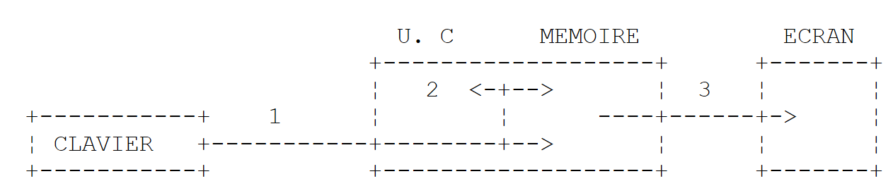

3. Les bases du langage Java
3.1. Introduction
Nous traitons Java d'abord comme un langage de programmation classique. Nous aborderons les classes dans le chapitre suivant. Dans un programme, on trouve deux choses :
- des données ;
- les instructions qui les manipulent.
On s'efforce généralement de séparer les données des instructions :

Tous les exemples de ce chapitre sont des fichiers source compacts : un seul fichier [.java], sans projet Maven, que l'on exécute avec la commande [java Bases01.java]. Le lanceur [java] compile alors le fichier en mémoire puis l'exécute, sans produire de fichier [.class]. Cette possibilité a été présentée au chapitre 2 « Installation de l'environnement de travail ». Les exemples se trouvent dans le dossier [03-bases] du code du cours. Ils s'exécutent avec la langue et les conventions françaises (la « locale » fr-FR), comme sur un poste Windows français. Nous verrons que cela n'a d'effet que sur les nombres et les dates mis en forme par un format : la simple conversion d'un réel en chaîne de caractères utilise toujours le point décimal.
3.2. Le programme minimal
3.2.1. Le fichier source compact
Le programme [Bases01.java] est le suivant :
Résultats :
Commentaires :
- le fichier ne contient aucune déclaration de classe : seulement une méthode [main]. C'est un fichier source compact (« compact source file », Java 25). Le compilateur enveloppe lui-même le contenu du fichier dans une classe, déclarée implicitement, qui porte le nom du fichier : [Bases01]. Cette possibilité a été proposée en préversion de Java 21 à Java 24 avant de devenir définitive en Java 25 ;
- ligne 3 : la méthode [main] est le point d'entrée du programme : c'est elle que le lanceur [java] exécute. Depuis Java 25, elle peut s'écrire simplement [void main()], sans les mots clés [public] et [static] et sans paramètre. Le corps de la méthode est placé entre accolades ;
- ligne 4 : la méthode [println] de la classe [IO] (Java 25) écrit une ligne à l'écran ;
- ligne 6 : la forme historique de la même opération. [System] est une classe, [out] l'un de ses champs, qui représente la sortie standard (l'écran), et [println] une méthode de cet objet. [IO.println(x)] n'est qu'un raccourci pour [System.out.println(x)]. Nous utiliserons [IO.println] dans les fichiers compacts et [System.out.println] dans les classes ordinaires, où on le rencontre dans tout le code Java existant ;
- ligne 8 : [List] est une liste de chaînes de caractères ; les listes seront étudiées au chapitre 5. [List] appartient au paquetage [java.util] : un paquetage (« package ») regroupe des classes apparentées, comme un dossier regroupe des fichiers. Le nom complet de la classe est [java.util.List]. Elle est utilisable sans directive d'importation parce que le fichier est un fichier compact (voir plus loin) ;
- ligne 9 : une liste s'affiche avec ses éléments entre crochets ;
- chaque instruction se termine par un point-virgule ; les lignes qui commencent par // sont des commentaires, ignorés par le compilateur.
Avec deux arguments sur la ligne de commande (ils se placent après le nom du fichier) :
Les arguments sont ignorés, car la méthode [void main()] n'a pas de paramètre pour les recevoir. Pour en disposer, on la déclare [void main(String[] args)] : le tableau de chaînes [args] contient alors les arguments de la ligne de commande. Nous y reviendrons dans la section « Arguments du programme principal ».
3.2.2. La forme classique avec une classe et une méthode main
Jusqu'à Java 24, le même programme s'écrivait obligatoirement de la façon suivante [Bases02.java] :
Résultats :
Commentaires :
- ligne 2 : la directive [import] importe la classe [Arrays] du paquetage [java.util]. On peut alors écrire [Arrays] au lieu de [java.util.Arrays]. Dans une classe ordinaire, seules les classes du paquetage [java.lang] ([System], [String], [Math], [Integer], [IO]...) sont utilisables sans importation ;
- ligne 4 : en Java, tout code appartient à une classe. La classe s'appelle ici [Bases02]. Une classe déclarée [public] doit se trouver dans un fichier qui porte son nom : [Bases02.java] ;
- ligne 6 : la méthode [main] est le point d'entrée du programme. Elle est [public] (accessible depuis l'extérieur de la classe, en particulier par le lanceur [java]), [static] (elle s'exécute sans qu'il soit nécessaire de créer un objet de la classe), ne rend aucun résultat ([void]) et reçoit les arguments de la ligne de commande dans le tableau [args] ;
- ligne 8 : le nombre d'éléments du tableau [args] est [args.length]. L'opérateur + concatène ici une chaîne et un nombre : le nombre est d'abord converti en chaîne ;
- ligne 10 : la méthode [Arrays.toString] construit une chaîne avec les éléments d'un tableau.
Un fichier qui contient une classe ordinaire peut lui aussi être exécuté directement par le lanceur ([java Bases02.java]). On peut également le compiler d'abord avec le compilateur [javac], qui produit un fichier [Bases02.class] contenant le code intermédiaire (« bytecode ») de la classe, puis exécuter cette classe avec la commande [java] suivie du nom de la classe (sans extension). C'est ce que font, en coulisse, Maven et les environnements de développement :
Les deux programmes [Bases01.java] et [Bases02.java] sont de même nature. Lorsqu'il rencontre un fichier compact, le compilateur génère lui-même une classe [final] portant le nom du fichier, dont les méthodes et les champs sont ceux écrits dans le fichier. Le fichier compact n'est donc qu'une écriture abrégée de la forme classique. Il convient bien aux petits programmes de ce chapitre ; la forme classique s'impose dès qu'un programme comporte plusieurs classes, ce qui sera le cas à partir du chapitre 4.
Depuis Java 25, la méthode [main] peut avoir quatre formes : [static void main(String[] args)], [static void main()], [void main(String[] args)] et [void main()] ; si une classe en contient plusieurs, le lanceur préfère celle qui a le paramètre [String[]]. Les deux dernières formes sont des méthodes d'instance : le lanceur crée d'abord un objet de la classe, puis appelle sa méthode [main]. Le mot clé [public] n'est plus obligatoire.
3.2.3. L'importation automatique du module java.base
Le programme [Bases01.java] utilise la classe [List] sans directive [import java.util.List;]. C'est possible parce que le compilateur ajoute automatiquement à tout fichier compact la directive suivante (Java 25) :
Les classes de la bibliothèque standard de Java sont rangées dans des paquetages, eux-mêmes regroupés en modules. Le module [java.base] est le module fondamental : il contient les paquetages les plus utilisés. La directive [import module java.base;] importe d'un coup toutes les classes publiques de tous les paquetages exportés par ce module, ce qui revient, entre autres, aux directives suivantes :
Dans un fichier compact, on dispose donc sans rien écrire des listes et des dictionnaires ([java.util]), des fichiers ([java.io], [java.nio.file]), des grands nombres ([java.math]), des dates ([java.time]), etc. Une classe d'un autre module, comme les classes JDBC du module [java.sql], doit toujours être importée explicitement. Dans une classe ordinaire, rien n'est importé d'office en dehors du paquetage [java.lang] : on écrit une directive par classe ([import java.util.Arrays;]), une directive par paquetage ([import java.util.*;]) ou, depuis Java 25, une directive par module ([import module java.base;]). La classe [IO] fait partie du paquetage [java.lang] : elle est utilisable partout.
3.3. Les données de Java
Java utilise les types de données suivants :
- les nombres entiers ;
- les nombres réels ;
- les nombres décimaux ;
- les caractères et chaînes de caractères ;
- les booléens ;
- les objets.
3.3.1. Les types de données prédéfinis
Type Java | Classe enveloppe | Donnée représentée | Suffixe des littéraux | Codage | Domaine de valeurs |
[char] | [Character] | caractère | 2 octets | caractère Unicode (UTF-16), de '\u0000' à '\uffff' | |
[byte] | [Byte] | nombre entier | 1 octet | [-2⁷, 2⁷-1] soit [-128, 127] | |
[short] | [Short] | nombre entier | 2 octets | [-2¹⁵, 2¹⁵-1] soit [-32768, 32767] | |
[int] | [Integer] | nombre entier | 4 octets | [-2³¹, 2³¹-1] soit [-2147483648, 2147483647] | |
[long] | [Long] | nombre entier | L | 8 octets | [-2⁶³, 2⁶³-1] soit [-9223372036854775808, 9223372036854775807] |
[float] | [Float] | nombre réel | F | 4 octets | [1,4 10⁻⁴⁵, 3,4 10³⁸] en valeur absolue, 7 chiffres significatifs |
[double] | [Double] | nombre réel | D (facultatif) | 8 octets | [4,9 10⁻³²⁴, 1,8 10³⁰⁸] en valeur absolue, 15 à 16 chiffres significatifs |
[boolean] | [Boolean] | booléen | non fixé | [true], [false] | |
[String] (classe) | chaîne de caractères | référence sur une séquence de caractères Unicode | |||
[BigDecimal] (classe) | nombre décimal | variable | nombre décimal exact, de précision quelconque | ||
[Object] (classe) | référence d'objet | référence sur un objet de n'importe quel type |
Les huit premiers types du tableau, dont le nom s'écrit en minuscules, sont les types primitifs de Java. Tous les autres types sont des types référence : les classes ([String], [BigDecimal], [Object]...), mais aussi les tableaux, les énumérations, les interfaces et les records que nous rencontrerons plus loin. La différence est fondamentale :
- une variable de type primitif contient directement sa valeur ;
- une variable de type référence contient l'adresse de l'objet (sa référence), l'objet lui-même étant rangé ailleurs en mémoire.
Une valeur de type primitif n'est pas un objet : elle n'a ni champs ni méthodes. À chaque type primitif correspond cependant une classe enveloppe (« wrapper class ») du paquetage [java.lang] : [Integer] pour [int], [Double] pour [double], [Character] pour [char], etc. Un objet [Integer] enveloppe une valeur [int]. Ces classes offrent aussi des constantes et des méthodes utiles : [Integer.MAX_VALUE], [Integer.BYTES], [Integer.parseInt]... Depuis Java 5, le compilateur passe automatiquement d'un type primitif à sa classe enveloppe (emballage, en anglais « boxing ») et inversement (déballage, « unboxing »). Ainsi, on peut écrire :
Le littéral 3 est de type [int]. Comme il n'a pas de méthodes, on ne peut pas écrire [3.getClass()] : il faut d'abord l'envelopper dans un objet [Integer] avec [Integer.valueOf(3)]. Tout objet a une méthode [getClass()] qui rend un objet décrivant sa classe ; la méthode [getName()] de cet objet donne le nom complet de la classe, ici [java.lang.Integer].
Java n'a pas d'entiers non signés, en dehors du type [char] (16 bits). Les classes enveloppes offrent en revanche des méthodes qui interprètent les bits d'un entier comme ceux d'un nombre non signé : [Integer.toUnsignedString], [Integer.parseUnsignedInt], [Integer.compareUnsigned], [Byte.toUnsignedInt]... Il n'a pas non plus de type primitif décimal : les montants se calculent avec la classe [BigDecimal] du paquetage [java.math], que nous présentons un peu plus loin.
Le programme [Bases03.java] illustre ces différents points :
Résultats :
Commentaires :
- ligne 3 : déclaration d'un entier [ent] initialisé à 2 ;
- ligne 4 : le suffixe F est obligatoire : le littéral 10.5 est de type [double], et le compilateur refuse [float fl = 10.5;], qui ferait perdre de la précision ;
- ligne 7 : le littéral 1000 est de type [int] ; il est converti automatiquement en [long] ;
- ligne 12 : un nombre [BigDecimal] est un objet ; on le crée ici à partir d'une chaîne de caractères, ce qui garantit une valeur exacte ;
- ligne 14 : la méthode [formatted] (Java 15) s'applique à une chaîne de format : chaque spécificateur %s est remplacé par la valeur du paramètre suivant convertie en chaîne, chaque %d par la valeur d'un entier. Les paramètres sont pris dans l'ordre. Nous reviendrons sur les formats dans la section suivante ;
- ligne 14 : la méthode [nomType] (lignes 36-38) attend un paramètre de type [Object]. La variable [ent], de type [int], est emballée automatiquement dans un objet [Integer], dont la classe est [java.lang.Integer] : c'est pourquoi l'affichage montre les classes enveloppes et non les noms des types primitifs. [Integer.BYTES] (Java 8) est la taille en octets d'un [int] ;
- ligne 17 : [String] est une classe et non un type primitif : la taille en mémoire d'un objet n'est pas accessible en Java ;
- ligne 22 : la taille d'un [boolean] n'est pas fixée par la spécification de Java : la classe [Boolean] n'a pas de constante [BYTES] ;
- ligne 25 : le littéral 3 est emballé explicitement dans un [Integer] ;
- lignes 27-29 : les constantes [MIN_VALUE] et [MAX_VALUE] des classes enveloppes donnent les bornes du domaine de valeurs. Attention : pour les réels, [Double.MIN_VALUE] est la plus petite valeur strictement positive (4,9 10⁻³²⁴) et non le plus grand nombre négatif, qui est [-Double.MAX_VALUE] ;
- lignes 31-32 : -1 est codé par 32 bits à 1 ; interprétés comme un entier non signé, ces 32 bits valent 2³²-1 ;
- lignes 36-38 : une méthode du fichier compact. Elle rend ([return]) une chaîne de caractères ([String]). Les méthodes sont présentées dans la section « Passage de paramètres à une fonction ».
On remarquera que les réels sont affichés avec un point décimal (10.5, -4.6), bien que le programme s'exécute en français. La conversion d'un nombre en chaîne par concaténation, par [String.valueOf], par [toString] ou par le spécificateur %s ne dépend pas de la langue de l'utilisateur : elle produit toujours le point décimal. Seuls les formats numériques comme %f, que nous allons voir, suivent les conventions de la langue.
3.3.2. Notation des données littérales
Donnée | Exemples de littéraux |
entier [int] (32 bits) | 145, -7, 0xFF (hexadécimal), 0b1010_1010 (binaire) |
entier [long] (64 bits), suffixe L | 100000L, 1_000_000_000_000L |
réel [double], suffixe D facultatif | 134.789, -45E-18 (-45 10⁻¹⁸), 10D |
réel [float], suffixe F | 134.789F, -45E-18F |
nombre décimal [BigDecimal] | pas de littéral : [new BigDecimal("100000.50")] |
caractère [char] | 'A', 'b', '\n', '\u00e9' |
chaîne [String] | "aujourd'hui", "c:\\chap1", bloc de texte """...""" |
booléen [boolean] | [true], [false] |
date | [LocalDate.of(1954, 10, 13)] (année, mois, jour) pour le 13/10/1954 |
Dans le code source, les réels s'écrivent toujours avec un point décimal. Depuis Java 7, on peut écrire les entiers en binaire (préfixe [0b]) et séparer les groupes de chiffres par le caractère _ pour améliorer la lisibilité : [1_000_000] est l'entier un million. Le suffixe L peut s'écrire en minuscule, mais l ressemble trop au chiffre 1. Attention enfin à un piège hérité du langage C : un entier écrit avec un 0 en tête est noté en octal (base 8) : 017 vaut 15.
Une chaîne littérale peut contenir des séquences d'échappement introduites par le caractère \ : "\n" représente la marque de fin de ligne et non la succession des deux caractères \ et n, "\t" une tabulation, "\"" un guillemet, "\\" le caractère \ lui-même. Pour écrire le chemin Windows c:\chap1\paragraph3, il faut donc écrire "c:\\chap1\\paragraph3". Java n'a pas de chaîne « brute » dans laquelle le caractère \ serait pris tel quel ; mais les classes de fichiers de Java acceptent aussi le séparateur / sous Windows : "c:/chap1/paragraph3" désigne le même fichier.
Pour construire une chaîne à partir de plusieurs valeurs, Java offre deux moyens :
- la concaténation avec l'opérateur + : dès que l'un des deux opérandes est une chaîne, l'autre est converti en chaîne ;
- les formats : [String.format(format, valeur1, valeur2, ...)], ou de façon équivalente [format.formatted(valeur1, valeur2, ...)] (Java 15), et pour un affichage direct [System.out.printf(format, valeur1, ...)]. La chaîne de format contient des spécificateurs remplacés dans l'ordre par les valeurs qui suivent : %s (une valeur quelconque convertie en chaîne), %d (un entier), %f (un réel), %.2f (un réel avec deux décimales), %x ou %X (un entier en hexadécimal), %,d (un entier avec séparateur des milliers), %e (notation scientifique), %n (une fin de ligne), %10s (une chaîne cadrée à droite sur 10 caractères), %-10s (cadrée à gauche)... Les formats numériques suivent les conventions de la langue de l'utilisateur.
Java n'a pas de chaînes « interpolées » contenant des expressions entre accolades : une telle fonctionnalité (les « string templates ») a été proposée en préversion dans Java 21 et 22, puis retirée. La concaténation et les formats restent les seuls moyens.
Depuis Java 15, on peut écrire une chaîne sur plusieurs lignes avec un bloc de texte (« text block ») : il commence par trois guillemets suivis d'une fin de ligne et se termine par trois guillemets. Il peut contenir des guillemets sans échappement. Les espaces communs en début de toutes les lignes (y compris la ligne des guillemets fermants) sont retirés, ce qui permet d'indenter le texte avec le code. En revanche, les séquences d'échappement y sont interprétées comme dans une chaîne ordinaire : il faut toujours écrire \\ pour obtenir \. Les blocs de texte sont très pratiques pour écrire du JSON, du SQL ou du HTML.
Le programme [Bases04.java] montre ces différentes notations :
Résultats :
Commentaires :
- ligne 4 : [0xFF] vaut 255 et [0b1010_1010] vaut 170 ;
- ligne 5 : le suffixe L est obligatoire pour un littéral qui dépasse le domaine des [int]. Sans lui, le compilateur refuse la ligne avec le message [error: integer number too large] ;
- ligne 8 : -45E-18 est affiché -4.5E-17 : c'est la même valeur, normalisée. Le réel 10D est affiché 10.0 : la conversion d'un [double] en chaîne produit toujours au moins une décimale ;
- ligne 10 : un [BigDecimal] conserve le nombre de décimales avec lequel il a été écrit : 100000.50 et non 100000.5 ;
- ligne 13 : la séquence \u00e9 désigne le caractère Unicode de code hexadécimal 00E9, c'est-à-dire é ;
- ligne 17 : une date. La classe [LocalDate] (paquetage [java.time], Java 8) représente une date sans heure. Sa conversion en chaîne utilise le format international ISO 8601 (année-mois-jour), quelle que soit la langue. Nous retrouverons les dates au chapitre 5 ;
- ligne 21 : chaque \\ représente un seul caractère \ ;
- ligne 23 : une fin de ligne et une tabulation ;
- ligne 28 : une concaténation. Les parenthèses de [(age + 10)] sont indispensables : sans elles, les opérateurs + seraient évalués de gauche à droite, la chaîne recevrait d'abord 23 puis 10, et l'on obtiendrait « il aura 2310 ans » ;
- ligne 29 : le même texte construit par un format ;
- ligne 31 : quelques spécificateurs : %.1f (une décimale), %X (hexadécimal en majuscules), %,d (séparateur des milliers). Ces formats suivent les conventions françaises : virgule décimale et, comme séparateur des milliers, une espace insécable fine ;
- ligne 32 : il n'y a pas de spécificateur pour le binaire : la méthode [Integer.toBinaryString] fait la conversion ;
- ligne 33 : un format de date personnalisé : jour de la semaine (EEEE), jour (d), mois en lettres (MMMM), année (yyyy). Les noms des jours et des mois sont en français, la langue de l'utilisateur ;
- lignes 36-41 : un bloc de texte sur plusieurs lignes. Les guillemets y sont écrits tels quels. Les huit espaces communs à toutes les lignes ont été retirés. La séquence \\ a donné un seul \. Comme les guillemets fermants sont seuls sur leur ligne, le bloc se termine par une fin de ligne : on l'affiche donc avec [IO.print], qui ne passe pas à la ligne ;
- lignes 44-45 : un bloc de texte dont les guillemets fermants suivent le texte : il ne se termine pas par une fin de ligne. La méthode [formatted] remplace %s et %d par les valeurs de [nom] et [age] : c'est la façon Java d'insérer des valeurs dans un texte.
3.3.3. Déclaration des données
3.3.3.1. Rôle des déclarations
Un programme manipule des données caractérisées par un nom et un type. Ces données sont stockées en mémoire. Au moment de la traduction du programme, le compilateur affecte à chaque donnée un emplacement en mémoire caractérisé par une adresse et une taille. Il le fait en s'aidant des déclarations faites par le programmeur. Par ailleurs, celles-ci permettent au compilateur de détecter des erreurs de programmation. Ainsi l'opération [x = x * 2;] sera déclarée erronée si [x] est une chaîne de caractères.
3.3.3.2. Déclaration des constantes
En Java, une constante est une variable déclarée avec le mot clé [final] : elle ne peut recevoir une valeur qu'une seule fois. La syntaxe est la suivante :
Une constante utilisée par tout le programme est déclarée en dehors des méthodes, comme un champ [static final] de la classe. Par exemple :
Pourquoi déclarer des constantes ?
- la lecture du programme est plus aisée si l'on a donné à la constante un nom significatif ;
- la modification du programme est plus aisée si la « constante » vient à changer. Ainsi, si le taux de TVA passe à 0,25, la seule modification à faire sera celle de l'instruction qui définit sa valeur : [static final double TAUX_TVA = 0.25;]. Si l'on avait utilisé 0.2 explicitement dans le programme, ce serait de nombreuses instructions qu'il faudrait modifier.
Par convention, en Java, le nom d'une constante [static final] s'écrit en majuscules, les mots étant séparés par le caractère _ : [TAUX_TVA], [MAX_VALUE]. Une variable locale peut elle aussi être déclarée [final] ; elle garde alors un nom ordinaire. Le mot [const] est réservé en Java, mais il n'est pas utilisé.
3.3.3.3. Déclaration des variables
Une variable est identifiée par un nom et se rapporte à un type de données. Java fait la différence entre majuscules et minuscules : les variables [FIN] et [fin] sont différentes. Par convention, le nom d'une variable commence par une minuscule, chaque mot suivant par une majuscule : [prixHt], [nbEnfants].
Les variables peuvent être initialisées lors de leur déclaration. La syntaxe de déclaration d'une ou plusieurs variables est :
où [type] est un type prédéfini ou un type défini par le programmeur. L'initialisation est facultative ; en revanche, Java refuse qu'on utilise la valeur d'une variable locale qui n'a pas encore reçu de valeur (message [variable x might not have been initialized]).
Depuis Java 10, on peut aussi ne pas préciser le type d'une variable locale en utilisant le mot [var] à la place du type :
Le mot [var] ne veut pas dire que la variable n'a pas de type précis : elle a le type de la valeur qui lui est affectée, déterminé par le compilateur. L'initialisation est ici obligatoire, afin que le compilateur puisse en déduire le type. [var] n'est utilisable que pour les variables locales (pas pour les champs ni pour les paramètres des méthodes). On l'utilise lorsque le type est évident à la lecture de la valeur, en particulier lorsque son nom est long.
Le programme [Bases05.java] est le suivant :
Résultats :
Commentaires :
- ligne 3 : une constante de classe. Dans un fichier compact, une variable déclarée en dehors des méthodes est un champ de la classe implicite ;
- ligne 7 : une constante locale ;
- ligne 9 : le résultat est un [double], affiché avec au moins une décimale : 120.0 ;
- ligne 12 : une donnée typée explicitement ;
- ligne 13 : [getSimpleName()] (ligne 33) est le nom court de la classe, [getName()] son nom complet. Comme dans le programme précédent, l'[int] est emballé dans un [Integer] pour être passé à [nomType] ;
- ligne 15 : une donnée typée implicitement. Parce que 3 est de type [int], [j] sera de type [int]. L'affichage montre [Integer] pour la même raison qu'à la ligne 13 ;
- ligne 17 : parce que [LocalDateTime.now()] (la date et l'heure courantes) est de type [LocalDateTime], [aujourdhui] sera de type [LocalDateTime] ;
- lignes 19-22 : le type déduit dépend de l'écriture du littéral : 3.5 est un [double], 3.5F un [float], 10L un [long] ;
- ligne 26 : trois variables déclarées sur une même ligne ; seules [a] et [c] sont initialisées. [b] reçoit sa valeur à la ligne suivante.
Une variable typée implicitement par le mot [var] ne peut pas changer de type ensuite. Ainsi, après la ligne 17, l'instruction [aujourdhui = "aujourd'hui";] est refusée par le compilateur :
3.3.4. Les valeurs absentes : null, classes enveloppes et Optional
Une variable d'un type primitif, comme [int], contient toujours une valeur. Il est parfois utile de pouvoir exprimer l'absence de valeur : un âge inconnu, un champ non renseigné dans une base de données. On utilise alors la classe enveloppe : une variable de type [Integer] est une référence, qui peut valoir [null], c'est-à-dire « pas d'objet ».
Toute variable d'un type référence peut en effet valoir [null] : elle ne référence alors aucun objet. Utiliser un membre d'une telle variable, par exemple sa méthode [length()], provoque une erreur à l'exécution, une [NullPointerException] : c'est l'erreur la plus fréquente en Java. Depuis Java 15, son message indique précisément quelle expression valait [null]. Le compilateur Java ne fait pas la différence entre une référence qui peut valoir [null] et une référence qui ne le peut pas ; des annotations comme celles du projet JSpecify ([@Nullable], [@NonNull]), exploitées par des outils d'analyse, permettent de combler ce manque, mais nous ne les utiliserons pas.
Pour indiquer qu'une méthode peut ne rien rendre, Java 8 a ajouté la classe [Optional<T>] : un objet [Optional<String>] est une « boîte » qui contient une chaîne ou qui est vide. On le crée avec [Optional.of(valeur)], [Optional.empty()] ou [Optional.ofNullable(valeurOuNull)] ; on l'interroge avec [isPresent()], [isEmpty()] (Java 11), [get()], [orElse(valeurParDefaut)]... Les classes [OptionalInt], [OptionalLong] et [OptionalDouble] jouent le même rôle pour les types primitifs.
Nous rencontrerons la valeur [null] dès les premiers exemples, car la méthode [IO.readln()], qui lit une ligne tapée au clavier, rend [null] lorsqu'il n'y a plus rien à lire (fin du flux d'entrée). Le programme [Bases06.java] est le suivant :
Résultats avec une saisie au clavier :
Résultats lorsque l'utilisateur tape Ctrl-D (Ctrl-Z puis Entrée sous Windows), qui ferme le flux d'entrée :
Commentaires :
- ligne 4 : [age] ne référence aucun objet ;
- ligne 7 : l'[int] 23 est emballé automatiquement : le compilateur a écrit pour nous [age = Integer.valueOf(23);] ;
- ligne 10 : l'[Integer] est déballé automatiquement : le compilateur a écrit [int n = age.intValue();] ;
- lignes 13-19 : déballer un [Integer] qui vaut [null] revient à appeler [intValue()] sur une référence nulle : une [NullPointerException] est lancée. Le piège est d'autant plus sournois qu'aucun appel de méthode n'est visible à la ligne 15. La structure [try / catch], qui intercepte l'erreur, est présentée plus loin ; on affiche ici le nom complet de la classe de l'exception ;
- ligne 22 : une chaîne qui ne référence aucun objet ;
- ligne 25 : un [Optional] qui contient la chaîne "dupont". La méthode [get()] (ligne 27) rend son contenu ; appliquée à un [Optional] vide, elle lancerait une exception [NoSuchElementException] ;
- ligne 26 : un [Optional] vide ;
- ligne 28 : [orElse] rend le contenu de l'[Optional], ou la valeur de remplacement passée en paramètre s'il est vide ;
- ligne 31 : [IO.readln(invite)] (Java 25) affiche l'invite sans passer à la ligne, puis lit la ligne tapée au clavier. Elle rend [null] si le flux d'entrée est fermé ;
- ligne 32 : on teste la valeur [null] ;
- ligne 36 : dans la branche [else], [ligne] ne vaut pas [null] : on peut utiliser [ligne.length()] sans risque.
3.3.5. Les conversions entre nombres et chaînes de caractères
Conversion | Méthode |
nombre -> chaîne | [String.valueOf(nombre)], [Integer.toString(nombre)], ["" + nombre] ou un format [String.format("%d", nombre)] |
chaîne -> int | [Integer.parseInt(chaine)] |
chaîne -> long | [Long.parseLong(chaine)] |
chaîne -> double | [Double.parseDouble(chaine)] |
chaîne -> float | [Float.parseFloat(chaine)] |
chaîne -> BigDecimal | [new BigDecimal(chaine)] |
chaîne -> boolean | [Boolean.parseBoolean(chaine)] |
La conversion d'une chaîne vers un nombre peut échouer si la chaîne ne représente pas un nombre valide. La méthode de conversion génère alors une erreur appelée exception, ici de type [NumberFormatException], qui arrête le programme si elle n'est pas gérée. Cette erreur peut être gérée par la clause [try / catch] suivante :
Si la méthode ne génère pas d'exception, on passe à l'instruction suivante ; sinon, on passe dans le corps de la clause [catch], puis à l'instruction suivante. Nous reviendrons sur la gestion des exceptions dans la section qui lui est consacrée.
Les méthodes [parseInt], [parseDouble]... acceptent un signe + ou - en tête, mais ni espaces ni séparateur des milliers : on retire les espaces de début et de fin d'une saisie avec la méthode [trim()] de la classe [String] avant de la convertir. La bibliothèque Java n'a pas de méthode qui tenterait une conversion et rendrait un indicateur de réussite au lieu de lancer une exception ; il est facile d'en écrire une, qui rend un [OptionalInt] vide en cas d'échec : c'est ce que fait la méthode [essayerParseInt] du programme suivant.
Le programme [Bases07.java] présente quelques techniques de conversion entre nombres et chaînes de caractères. La méthode [affiche] y écrit à l'écran la valeur de son paramètre :
Résultats :
Commentaires :
- lignes 4-7 : les données à convertir ;
- lignes 10-13 : quatre façons de convertir un nombre en chaîne. La dernière concatène une chaîne vide et le nombre ;
- ligne 17 : un booléen s'affiche [true] ou [false] ;
- lignes 22-27 : on gère l'exception que peut lancer [Integer.parseInt]. [e.getMessage()] est le message d'erreur lié à l'exception [e]. Les messages des exceptions du JDK sont en anglais : ils ne sont pas traduits ;
- ligne 40 : [Double.parseDouble] attend toujours un point décimal, quelle que soit la langue de l'utilisateur : la chaîne "100.87" est lue de la même façon sur toutes les machines. C'est la bonne façon de lire des nombres dans des fichiers ou des échanges entre programmes ;
- ligne 53 : en conséquence, la virgule décimale est refusée ;
- ligne 60 : la conversion d'une chaîne en [BigDecimal] ; elle aussi attend un point décimal ;
- lignes 64-71 : la méthode [essayerParseInt] (lignes 92-98) rend un [OptionalInt] qui contient l'entier si la conversion a réussi, et qui est vide sinon. [getAsInt()] rend l'entier contenu ;
- ligne 74 : [Locale.getDefault()] rend la locale du programme, c'est-à-dire la langue et le pays de l'utilisateur, déduits des réglages du système : ici fr-FR ;
- ligne 75 : un format utilise la locale courante : le réel est écrit avec une virgule décimale ;
- ligne 76 : [Locale.ROOT] est une locale neutre qui utilise le point décimal, quelle que soit la machine. On l'utilise pour écrire des nombres formatés dans des fichiers ou des échanges entre programmes, qui ne doivent pas dépendre de la langue de l'utilisateur ;
- ligne 79 : pour lire un nombre écrit selon les conventions françaises, on utilise un objet [NumberFormat] (paquetage [java.text]) obtenu pour la locale [Locale.FRANCE]. Sa méthode [parse] rend un objet [Number] et peut lancer une exception [ParseException]. Celle-ci est une exception contrôlée : le compilateur exige qu'on la gère, ce que nous expliquerons dans la section sur les exceptions ;
- lignes 87-89 : une méthode du fichier compact. Les méthodes peuvent être écrites dans n'importe quel ordre, avant ou après [main] ;
- lignes 92-98 : la méthode [essayerParseInt]. La variable de la clause [catch] s'appelle _ : depuis Java 22, ce caractère désigne une variable anonyme, que l'on déclare parce que la syntaxe l'exige mais que l'on n'utilise pas.
Retenons que les méthodes [parseXXX] et [toString] ignorent la langue de l'utilisateur (point décimal), alors que les formats et la classe [NumberFormat] la respectent. Un programme qui lit des nombres doit toujours savoir selon quelles conventions ils ont été écrits.
3.3.6. Les tableaux de données
Un tableau Java est un objet permettant de rassembler sous un même identificateur des données de même type. Sa déclaration est la suivante :
[n] est le nombre de données que peut contenir le tableau. La syntaxe [tableau[i]] désigne la donnée n° i, où i appartient à l'intervalle [0, n-1]. Toute référence à la donnée [tableau[i]] où i n'appartient pas à l'intervalle [0, n-1] provoque une exception [ArrayIndexOutOfBoundsException]. À sa création, chaque élément du tableau reçoit la valeur par défaut de son type : 0 pour les nombres, [false] pour les booléens, [null] pour les types référence. Un tableau peut être initialisé en même temps que déclaré :
ou plus simplement, dans une déclaration :
Les tableaux ont un champ [length] (sans parenthèses) qui est leur nombre d'éléments. Un tableau ne peut pas changer de taille après sa création : pour une collection qui grandit, on utilise une liste (chapitre 5). On rencontre aussi la notation [int entiers[]], héritée du langage C : elle est acceptée mais déconseillée.
Java n'a pas de véritable tableau à deux dimensions : un tableau à deux indices est un tableau de tableaux. La déclaration
crée un tableau de [n] éléments, chacun étant une référence sur un tableau de [m] éléments : [n] lignes et [m] colonnes. La syntaxe [tableau[i][j]] désigne l'élément j de la ligne i. [tableau.length] est le nombre de lignes, [tableau[i].length] le nombre d'éléments de la ligne i. Le tableau peut lui aussi être initialisé en même temps qu'il est déclaré :
Puisque chaque ligne est un tableau indépendant, les lignes peuvent avoir des longueurs différentes (on parle de tableau en escalier). La déclaration
crée un tableau de n éléments dont chacun est une référence de tableau à une dimension. Ces références ne sont pas initialisées par la déclaration ci-dessus : elles ont la valeur [null].
Java n'offre pas d'indice compté depuis la fin du tableau ni de notation pour extraire une plage d'éléments. Le dernier élément s'écrit [tableau[tableau.length - 1]], et la méthode [Arrays.copyOfRange(tableau, debut, fin)] rend un nouveau tableau formé des éléments d'indices [debut] (inclus) à [fin] (exclu). La classe [java.util.Arrays] offre de nombreuses autres méthodes utilitaires : [toString], [deepToString], [sort], [fill], [equals], [copyOf]... Les listes, plus souples, ont depuis Java 21 des méthodes [getFirst()] et [getLast()].
Le programme [Bases08.java] regroupe ces différents tableaux :
Résultats :
Commentaires :
- ligne 4 : un tableau à une dimension initialisé ;
- ligne 5 : une boucle [for] parcourt les indices de 0 à [entiers.length - 1]. La boucle [for] est présentée plus loin ;
- ligne 10 : un tableau à deux dimensions (2 lignes, 2 colonnes). L'entier -6 est converti en réel -6.0 ;
- lignes 11-12 : [reels.length] est le nombre de lignes, [reels[i].length] le nombre de colonnes de la ligne i ;
- ligne 16 : [Arrays.deepToString] affiche un tableau de tableaux ;
- ligne 19 : un tableau [noms] de 3 éléments. Chaque élément est une référence sur un tableau de type [String[]], pour l'instant [null] ;
- ligne 21 : les 3 éléments du tableau [noms] sont initialisés. [noms[i]] référence désormais un tableau de i+1 chaînes ;
- ligne 26 : [noms[i][j]] est l'élément j du tableau référencé par [noms[i]]. L'expression "nom" + i + j est évaluée de gauche à droite : "nom" + i donne une chaîne, à laquelle on concatène j ;
- lignes 37-38 : des tableaux créés sans valeurs initiales : leurs éléments ont la valeur par défaut de leur type ;
- ligne 42 : la forme abrégée de l'initialisation ;
- ligne 44 : la méthode [Arrays.toString] construit une chaîne avec les éléments du tableau. Afficher directement le tableau ([IO.println(valeurs)]) donnerait un texte comme [I@6328d34a (le type du tableau et un code numérique), et non son contenu ;
- ligne 46 : le dernier et l'avant-dernier élément ;
- ligne 48 : les éléments d'indices 1 et 2 ;
- ligne 50 : les éléments de l'indice 2 jusqu'à la fin ;
- lignes 53-54 : [copyOfRange] crée une copie : modifier [extrait] ne modifie pas [valeurs] ;
- lignes 56-57 : une liste non modifiable créée par [List.of], et ses méthodes [getFirst()] et [getLast()] (Java 21).
3.4. Les instructions élémentaires de Java
On distingue :
- les instructions élémentaires exécutées par l'ordinateur ;
- les instructions de contrôle du déroulement du programme.
Les instructions élémentaires apparaissent clairement lorsqu'on considère la structure d'un micro-ordinateur et de ses périphériques :

- 1 : lecture d'informations provenant du clavier ;
- 2 : traitement d'informations ;
- 3 : écriture d'informations à l'écran.
3.4.1. Écriture sur écran
Il existe différentes instructions d'écriture à l'écran :
où [expression] est toute donnée qui puisse être convertie en chaîne de caractères pour être affichée à l'écran. Tous les objets Java ont une méthode [toString()] qui est utilisée pour faire cette conversion ; les valeurs des types primitifs sont converties par [String.valueOf]. La méthode [print] fait la même chose que [println] sans passer à la ligne, et la méthode [printf(format, valeur1, ...)] écrit le résultat d'un format.
La classe [System] donne accès à deux flux d'écriture, ses champs statiques [out] et [err], de type [PrintStream] :
- [System.out.println()] écrit sur le flux [out], la sortie standard, associée habituellement à l'écran ;
- [System.err.println()] écrit sur le flux [err], la sortie d'erreur, habituellement associée elle aussi à l'écran.
La classe [IO] (Java 25) offre les méthodes [println] et [print], qui écrivent sur [System.out]. Les flux [out] et [err] peuvent être redirigés vers des fichiers au moment de l'exécution du programme, comme nous le verrons prochainement.
3.4.2. Lecture de données tapées au clavier
Le flux de données provenant du clavier est désigné par le champ [System.in], de type [InputStream]. C'est un flux d'octets, peu commode à utiliser directement. Pendant longtemps, pour lire une ligne de texte, il a fallu l'envelopper dans d'autres objets :
ou utiliser la classe [Scanner] (Java 5). Depuis Java 25, la classe [IO] offre une méthode [readln] beaucoup plus simple, sous deux formes :
La ligne tapée au clavier, sans la marque de fin de ligne, est rangée dans la variable [ligne] et peut ensuite être exploitée par le programme. La seconde forme affiche d'abord une invite, sans passer à la ligne. Comme nous l'avons vu, [readln] rend [null] lorsque le flux d'entrée est épuisé. Le flux [System.in] peut être redirigé vers un fichier, comme les flux [out] et [err]. Signalons enfin la classe [Console], obtenue par [System.console()], dont la méthode [readPassword] lit un mot de passe sans l'afficher.
3.4.3. Exemple d'entrées-sorties
Le programme [Bases09.java] illustre les opérations d'entrées-sorties clavier / écran :
Résultats :
Commentaires :
- ligne 4 : [obj] est une référence d'objet ;
- ligne 5 : [obj] est écrit à l'écran. C'est la méthode [obj.toString()] qui est appelée pour obtenir le texte à afficher ;
- ligne 9 : on écrit sur le flux [err] ;
- ligne 10 : la même chose avec un format. Le premier paramètre "i=%d%n" est le format d'affichage, les autres paramètres sont les valeurs à afficher : %d est remplacé par la valeur de [i], %n par la marque de fin de ligne du système (\r\n sous Windows, \n sous Linux et macOS) ;
- ligne 13 : on affiche une invite sans passer à la ligne, puis on lit la ligne tapée au clavier ;
- ligne 14 : si [ligne] valait [null], la concaténation produirait la chaîne "null".
Dans les résultats :
- ligne 2 : l'affichage produit par la ligne 5 du code. La méthode [toString()] de la classe [Object] rend le nom complet de la classe de l'objet, suivi du caractère @ et d'un code numérique en hexadécimal (son « code de hachage »), qui peut changer d'une exécution ou d'une machine à l'autre. Les classes redéfinissent en général cette méthode pour afficher quelque chose de plus utile, comme nous le ferons au chapitre 4 ;
- lignes 3-4 : les deux écritures sur le flux [err] apparaissent à l'écran comme celles du flux [out].
3.4.4. Redirection des entrées-sorties
Windows, Linux et macOS connaissent trois périphériques standard :
- le périphérique d'entrée standard, qui désigne par défaut le clavier et porte le n° 0 ;
- le périphérique de sortie standard, qui désigne par défaut l'écran et porte le n° 1 ;
- le périphérique d'erreur standard, qui désigne par défaut l'écran et porte le n° 2.
En Java, le flux d'écriture [System.out] écrit sur le périphérique 1, le flux d'écriture [System.err] écrit sur le périphérique 2 et le flux de lecture [System.in] lit les données provenant du périphérique 0.
Lorsqu'on lance un programme dans une fenêtre de commandes, on peut fixer quels seront les périphériques 0, 1 et 2 pour le programme exécuté. Derrière les arguments du programme, on peut rediriger les périphériques d'entrées-sorties standard vers des fichiers :
Redirection | Signification |
0<in.txt ou <in.txt | le flux d'entrée standard n° 0 est redirigé vers le fichier in.txt. Dans le programme, le flux [System.in] prendra donc ses données dans le fichier in.txt |
1>out.txt ou >out.txt | redirige la sortie n° 1 vers le fichier out.txt. Dans le programme, le flux [System.out] écrira donc ses données dans le fichier out.txt |
1>>out.txt ou >>out.txt | idem, mais les données écrites sont ajoutées au contenu actuel du fichier out.txt |
2>err.txt | redirige la sortie n° 2 vers le fichier err.txt. Dans le programme, le flux [System.err] écrira donc ses données dans le fichier err.txt |
2>>err.txt | idem, mais les données écrites sont ajoutées au contenu actuel du fichier err.txt |
1>out.txt 2>err.txt | les périphériques 1 et 2 sont tous les deux redirigés vers des fichiers |
On notera que pour rediriger les flux d'entrées-sorties d'un programme vers des fichiers, le programme n'a pas besoin d'être modifié : c'est le système d'exploitation qui fixe la nature des périphériques 0, 1 et 2. Considérons le programme [Bases10.java] suivant :
Les redirections s'appliquent au programme lancé par la commande [java]. Voici une session dans un terminal Linux (bash) :
Commentaires :
- ligne 1 : on met la chaîne test dans le fichier in.txt ;
- ligne 2 : on affiche le contenu du fichier in.txt pour vérification ;
- ligne 4 : exécution du programme. Le flux [System.in] est redirigé vers le fichier in.txt, le flux [System.out] vers le fichier out.txt, le flux [System.err] vers le fichier err.txt. L'exécution ne provoque aucun affichage ;
- lignes 5-6 : le contenu du fichier out.txt montre que le fichier in.txt a été lu et que l'écriture sur le flux [out] a été redirigée vers out.txt ;
- lignes 7-8 : vérification analogue pour le fichier err.txt ;
- lignes 9-10 : seul le flux [err] est redirigé : l'écran n'affiche que l'écriture sur le flux [out] ;
- lignes 11-12 : seul le flux [out] est redirigé : l'écran n'affiche que l'écriture sur le flux [err].
On voit clairement que les flux [out] et [err] n'écrivent pas sur les mêmes périphériques puisqu'on a pu les rediriger séparément. Le flux [err] est fait pour les messages d'erreur : on peut ainsi rediriger les résultats d'un programme vers un fichier tout en continuant à voir ses messages d'erreur à l'écran.
Les opérateurs >, >> et 2> s'écrivent de la même façon dans l'invite de commandes Windows ([cmd]), dans PowerShell et dans bash. L'opérateur < est reconnu par [cmd] et bash, mais pas par PowerShell, qui le réserve pour un usage futur : on y envoie un fichier sur l'entrée standard d'un programme avec un tube (|). Les commandes suivantes, données à titre d'illustration (elles n'ont pas été exécutées pour ce cours), font sous Windows ce que fait la session bash ci-dessus :
3.4.5. Affectation de la valeur d'une expression à une variable
On s'intéresse ici à l'opération [variable = expression;]. L'expression peut être de type arithmétique, relationnelle, booléenne, caractères, etc.
3.4.5.1. Interprétation de l'opération d'affectation
L'opération [variable = expression;] est elle-même une expression dont l'évaluation se déroule de la façon suivante :
- la partie droite de l'affectation est évaluée : le résultat est une valeur V ;
- la valeur V est affectée à la variable ;
- la valeur V est aussi la valeur de l'affectation, vue cette fois en tant qu'expression.
C'est ainsi que l'opération [V1 = V2 = expression] est légale. L'opérateur = étant évalué de droite à gauche, on a [V1 = (V2 = expression)]. L'expression [V2 = expression] est évaluée et a pour valeur V. Son évaluation a provoqué l'affectation de V à V2. L'opérateur = suivant est alors évalué sous la forme [V1 = V]. La valeur de cette expression est encore V ; son évaluation provoque l'affectation de V à V1. Ainsi donc, l'opération [V1 = V2 = expression] est une expression dont l'évaluation :
- provoque l'affectation de la valeur de [expression] aux variables V1 et V2 ;
- rend comme résultat la valeur de [expression].
On peut généraliser à une expression du type [V1 = V2 = ... = Vn = expression].
3.4.5.2. Expressions arithmétiques
Les opérateurs des expressions arithmétiques sont les suivants :
Opérateur | Rôle |
+ | addition |
- | soustraction |
* | multiplication |
/ | division : le résultat est le quotient exact si l'un au moins des opérandes est réel. Si les deux opérandes sont entiers, le résultat est le quotient entier. Ainsi 5/2 vaut 2 et 5.0/2 vaut 2.5 |
% | reste de la division (modulo), quelle que soit la nature des opérandes. Le reste a le signe du dividende : -5 % 2 vaut -1. La méthode [Math.floorMod(-5, 2)] donne le reste au sens mathématique, du signe du diviseur : 1 |
Il existe diverses fonctions mathématiques. En voici quelques-unes :
Fonction | Rôle |
[double sqrt(double x)] | racine carrée |
[double cos(double x)], [sin], [tan] | cosinus, sinus, tangente (angle en radians) |
[double pow(double x, double y)] | x à la puissance y |
[double exp(double x)] | exponentielle |
[double log(double x)], [log10] | logarithme népérien, décimal |
[abs(x)], [max(x, y)], [min(x, y)] | valeur absolue, maximum, minimum (pour les types int, long, float, double) |
[double floor(double x)], [ceil] | partie entière inférieure, supérieure |
[long round(double x)], [double rint(double x)] | arrondi à l'entier le plus proche |
[clamp(valeur, min, max)] | valeur ramenée dans l'intervalle [min, max] (Java 21) |
[Math.PI], [Math.E] | les constantes π et e |
Toutes ces fonctions sont des méthodes statiques d'une classe Java appelée [Math] (paquetage [java.lang]). Lorsqu'on les utilise, il faut les préfixer avec le nom de la classe où elles sont définies. Ainsi on écrira :
La description complète de la classe [Math] se trouve dans la documentation en ligne de Java, docs.oracle.com/en/java/javase/25/docs/api/java.base/java/lang/Math.html.
Les réels [double] sont codés en binaire : la plupart des nombres décimaux, comme 0,1, n'y ont qu'une valeur approchée. C'est sans importance pour un calcul scientifique, mais inacceptable pour des montants. La classe [BigDecimal] (paquetage [java.math]) représente au contraire un nombre décimal de façon exacte, avec autant de chiffres que nécessaire. Java ne permettant pas de redéfinir les opérateurs, les calculs se font avec des méthodes : [add], [subtract], [multiply], [divide], [compareTo]... Un [BigDecimal] est immuable : une opération ne modifie pas l'objet sur lequel elle s'applique, elle rend un nouvel objet.
Le programme [Bases11.java] est le suivant :
Résultats :
Commentaires :
- ligne 4 : la division de deux entiers est une division entière. Dans cette concaténation, les divisions sont faites avant les + car l'opérateur / est prioritaire (voir plus loin) ;
- ligne 6 : le reste a le signe du dividende ; l'opérateur % s'applique aussi aux réels ;
- ligne 7 : [Math.floorMod] rend un reste du signe du diviseur ;
- ligne 10 : la division d'un réel par zéro ne provoque pas d'erreur : elle donne l'infini ([Infinity]) ou la valeur spéciale [NaN] (« Not a Number ») pour 0/0 ;
- lignes 12-17 : en revanche, la division d'un entier par zéro lance une exception [ArithmeticException] ;
- lignes 20-21 : l'exemple ci-dessus. [Math.sqrt] rend un [double] : 2.0 ;
- ligne 27 : [floor] arrondit vers le bas, [ceil] vers le haut. Pour tronquer un réel vers zéro, on le convertit en entier, comme nous le verrons plus loin ;
- ligne 29 : [Math.round] arrondit à l'entier le plus proche ; une valeur située exactement à mi-chemin est arrondie vers le haut : 2,5 donne 3 et -2,5 donne -2. Le résultat est un [long] ;
- ligne 31 : [Math.rint] arrondit une valeur située à mi-chemin vers l'entier pair le plus proche (arrondi « bancaire ») : 2,5 donne 2 et 3,5 donne 4. Le résultat est un [double] ;
- ligne 33 : [Math.clamp] (Java 21) ramène 150 dans l'intervalle [0, 100] ;
- ligne 36 : la priorité des opérateurs, présentée ci-dessous ;
- ligne 37 : "x" + 1 + 2 est évalué de gauche à droite : "x" + 1 donne la chaîne "x1", à laquelle on concatène 2. Pour additionner d'abord, il faut écrire "x" + (1 + 2) ;
- ligne 41 : une affectation multiple ;
- ligne 45 : 0,1 et 0,2 n'ont pas de représentation binaire exacte : leur somme n'est pas exactement 0,3 ;
- ligne 47 : deux [BigDecimal] créés à partir de chaînes. Il ne faut pas écrire [new BigDecimal(0.1)] : le paramètre serait le [double] 0.1, dont la valeur exacte est 0.1000000000000000055511151231257827021181583404541015625. [BigDecimal.valueOf(0.1)], qui passe par la chaîne "0.1", convient en revanche ;
- ligne 48 : l'addition exacte ;
- lignes 49-51 : [BigDecimal.valueOf(3)] convertit un entier. Un produit a autant de décimales que ses deux facteurs réunis : 59,97 × 1,2 = 71,964 ;
- ligne 53 : [setScale(2, RoundingMode.HALF_UP)] arrondit à deux décimales, les valeurs situées à mi-chemin étant arrondies en s'éloignant de zéro : c'est l'arrondi commercial ;
- ligne 55 : 10/3 n'a pas d'écriture décimale finie. La méthode [divide] exige alors une précision, donnée ici par [MathContext.DECIMAL64] (16 chiffres significatifs). Sans elle, la division lancerait une [ArithmeticException] : [Non-terminating decimal expansion; no exact representable decimal result.]
3.4.5.3. Priorités dans l'évaluation des expressions arithmétiques
La priorité des opérateurs lors de l'évaluation d'une expression arithmétique est la suivante (du plus prioritaire au moins prioritaire) :
Les opérateurs d'un même bloc [ ] ont même priorité. À priorité égale, l'évaluation se fait de gauche à droite : 10 - 4 - 3 vaut (10 - 4) - 3 = 3.
3.4.5.4. Expressions relationnelles
Les opérateurs sont les suivants : <, <=, ==, !=, >, >=. Leurs priorités :
- >, >=, <, <= ;
- ==, !=.
Le résultat d'une expression relationnelle est le booléen [false] si l'expression est fausse, [true] sinon.
Comparaison de deux caractères
Soient deux caractères C1 et C2. Il est possible de les comparer avec les opérateurs <, <=, ==, !=, >, >=. On compare alors leurs codes Unicode, qui sont des nombres. Selon l'ordre Unicode, on a les relations suivantes :
Comparaison de deux chaînes de caractères
Elles sont comparées caractère par caractère. La première inégalité rencontrée entre deux caractères induit une inégalité de même sens sur les chaînes. Soit à comparer les chaînes "Chat" et "Chien" :
Cette dernière inégalité permet de dire que "Chat" < "Chien". Soit à comparer les chaînes "Chat" et "Chaton". Il y a égalité jusqu'à épuisement de la chaîne "Chat". Dans ce cas, la chaîne épuisée est déclarée la plus « petite ». On a donc la relation "Chat" < "Chaton".
Méthodes de comparaison de deux chaînes
Attention, c'est un piège classique en Java : appliqués à deux chaînes, comme à deux objets quelconques, les opérateurs == et != comparent les références et non les contenus. [s1 == s2] est vrai si les deux variables désignent le même objet en mémoire, pas si les deux chaînes contiennent les mêmes caractères. Pour tester l'égalité de deux chaînes, on utilise la méthode [equals] de la classe [String], ou [equalsIgnoreCase] pour ne pas tenir compte de la différence entre majuscules et minuscules. Les opérateurs < <= > >= ne s'appliquent pas aux chaînes : il faut utiliser la méthode [compareTo] (ou [compareToIgnoreCase]). Elle rend un entier :
- nul si les deux chaînes sont égales ;
- positif si la chaîne n° 1 est supérieure à la chaîne n° 2 ;
- négatif si la chaîne n° 1 est inférieure à la chaîne n° 2.
[compareTo] compare les codes Unicode, caractère par caractère : son résultat est la différence des codes des deux premiers caractères différents, ou la différence des longueurs si l'une des chaînes est le début de l'autre. Ce n'est pas l'ordre d'un dictionnaire : comme le code de 'é' (233) est supérieur à celui de 'f' (102), "élan" se range après "face". Pour trier des textes destinés à l'utilisateur, on utilise un objet [Collator] (paquetage [java.text]), qui applique les règles de tri d'une langue. [compareTo] reste la bonne méthode pour les identifiants, les mots clés, les noms de fichiers.
Le programme [Bases12.java] est le suivant :
Résultats :
Commentaires :
- ligne 4 : une expression relationnelle ;
- lignes 8-9 : la comparaison de caractères ;
- ligne 10 : la conversion [(int)] d'un caractère donne son code Unicode ;
- ligne 14 : la variable [n] reçoit un entier négatif puisque "chat" < "chien" : la différence des codes de 'a' (97) et de 'i' (105) ;
- ligne 15 : la variable [egal] a la valeur [true] si les deux chaînes sont égales, [false] sinon ;
- ligne 17 : la chaîne épuisée la première est la plus petite ; le résultat est la différence des longueurs : 4 - 6. Dans une chaîne littérale, \" désigne un guillemet ;
- ligne 20 : la méthode [concat] construit, à l'exécution, un nouvel objet chaîne qui contient "chat" ;
- lignes 21-22 : [chaine1] et [chaine3] ont le même contenu mais désignent deux objets différents : == rend [false], [equals] rend [true]. Le piège est d'autant plus sournois que deux chaînes littérales identiques sont rangées une seule fois en mémoire, si bien que ["chat" == "chat"] est vrai : un test avec == peut sembler fonctionner pendant les essais. On utilisera toujours [equals] ;
- ligne 25 : 233 - 102 = 131 : pour [compareTo], "élan" est après "face" ;
- ligne 26 : 'C' (67) - 'c' (99) = -32 ;
- lignes 28-30 : en ignorant la casse, "Chat" et "chat" sont égales ;
- lignes 32-34 : un [Collator] pour le français : "élan" précède "face", et "Chat" suit "chat" (à lettres égales, la minuscule passe avant la majuscule). La méthode [compare] rend un entier négatif, nul ou positif, comme [compareTo].
3.4.5.5. Expressions booléennes
Les opérateurs utilisables sont ET (&&), OU (||) et NON (!). Le résultat d'une expression booléenne est un booléen. Priorités des opérateurs :
- ! ;
- && ;
- ||.
Les opérateurs relationnels ont priorité sur les opérateurs && et ||. Ces deux opérateurs n'évaluent leur opérande droit que si c'est nécessaire : dans [a && b], b n'est pas évalué si a est faux ; dans [a || b], b n'est pas évalué si a est vrai. On dit qu'ils sont « court-circuités ». On peut ainsi écrire sans risque [texte != null && texte.length() > 0]. Les opérateurs & et |, appliqués à deux booléens, font le même calcul mais évaluent toujours leurs deux opérandes.
3.4.5.6. Traitement de bits
Soient [i] et [j] deux entiers :
Opération | Rôle |
i << n | décale i de n bits sur la gauche. Les bits entrants sont des zéros |
i >> n | décale i de n bits sur la droite. Le bit de signe est préservé |
i >>> n | décalage à droite non signé : les bits entrants sont des zéros, même si i est négatif |
i & j | fait le ET logique de i et j bit à bit |
i|j | fait le OU logique de i et j bit à bit |
~i | complémente i à 1 |
i ^ j | fait le OU EXCLUSIF de i et j bit à bit |
Le programme [Bases13.java] est le suivant :
Résultats :
Commentaires :
- ligne 3 : deux entiers [short] ;
- ligne 5 : la valeur 0xF123 (61731) ne tient pas dans un [short], dont le maximum est 32767. Le type [char], entier non signé sur 16 bits, peut la contenir ;
- ligne 6 : le spécificateur %04x affiche un entier en hexadécimal (x) sur 4 chiffres complétés par des zéros (04). Appliqué à un [short], il montre ses 16 bits : -13 donne fff3. Le spécificateur %x n'accepte pas un [char] : on le convertit en [int] ;
- ligne 7 : les opérations sur des [short] ou des [char] se font en [int] : les opérandes sont d'abord convertis en [int] (on parle de promotion), et le résultat est un [int] ;
- ligne 9 : on reconvertit donc les résultats en [short] pour afficher 4 chiffres hexadécimaux. Sans conversion, ~i serait affiché sur 8 chiffres (ffffff9b) ;
- ligne 12 : la méthode [binaire] (lignes 19-25) affiche les n bits de poids faible d'un entier. On vérifie bit à bit le ET logique de i et j ;
- ligne 15 : le décalage [>>] préserve le bit de signe de m, qui est négatif ; le décalage [>>>] fait entrer des zéros ;
- ligne 22 : [(valeur >>> rang) & 1] amène le bit n° [rang] en position 0 puis le sépare des autres. La classe [StringBuilder], présentée au chapitre 5, construit une chaîne par ajouts successifs.
3.4.5.7. Combinaison d'opérateurs
[a = a + b] peut s'écrire [a += b] ; [a = a - b] peut s'écrire [a -= b]. Il en est de même avec les opérateurs /, %, *, <<, >>, >>>, &, |, ^. Ainsi [a = a / 2;] peut s'écrire [a /= 2;]. Une petite différence : l'opérateur combiné contient une conversion implicite vers le type de la variable. Si [s] est un [short], [s = s + 1;] est refusé (le résultat de l'addition est un [int]), alors que [s += 1;] est accepté.
3.4.5.8. Opérateurs d'incrémentation et de décrémentation
La notation [variable++] signifie [variable = variable + 1] ou encore [variable += 1]. La notation [variable--] signifie [variable = variable - 1] ou encore [variable -= 1]. Utilisés dans une expression, ces opérateurs ont deux formes :
- [i++] (postfixée) : la valeur de l'expression est la valeur de i avant l'incrémentation ;
- [++i] (préfixée) : la valeur de l'expression est la valeur de i après l'incrémentation.
3.4.5.9. L'opérateur ternaire ?
L'expression [expr_cond ? expr1 : expr2] est évaluée de la façon suivante :
- l'expression [expr_cond] est évaluée. C'est une expression booléenne ;
- si elle est vraie, la valeur de l'expression est celle de [expr1], et [expr2] n'est pas évaluée ;
- si elle est fausse, c'est l'inverse qui se produit : la valeur de l'expression est celle de [expr2], et [expr1] n'est pas évaluée.
L'opération [i = (j > 4 ? j + 1 : j - 1);] affectera à la variable i : j+1 si j>4, j-1 sinon. C'est la même chose que d'écrire [if (j > 4) i = j + 1; else i = j - 1;], mais c'est plus concis.
3.4.5.10. Les valeurs null : pas d'opérateurs spécialisés
Contrairement à d'autres langages comme C# ou Kotlin, Java n'a pas d'opérateurs dédiés à la valeur [null] (valeur de remplacement, accès conditionnel à un membre). On utilise à la place :
- l'opérateur ternaire, [a != null ? a : b], ou la méthode [Objects.requireNonNullElse(a, b)] (Java 9) qui rend a s'il ne vaut pas [null], b sinon. On l'utilise pour donner une valeur de remplacement : [String nom = Objects.requireNonNullElse(IO.readln(), "");] ;
- un simple test, [if (a == null) a = b;], pour n'affecter une variable que si elle vaut [null] ;
- la classe [Optional] et sa méthode [map] pour n'accéder à un membre que si l'objet existe : [Optional.ofNullable(texte).map(String::length)] rend un [Optional] vide si [texte] vaut [null], et un [Optional] contenant la longueur du texte sinon.
Le programme [Bases14.java] réunit ces différents opérateurs :
Résultats :
Commentaires :
- ligne 5 : une expression booléenne ;
- lignes 9-19 : les opérateurs combinés : 10+5=15, 15*2=30, 30/4=7 (division entière), 7%4=3, 3<<2=12 ;
- ligne 23 : [j] reçoit 5, puis [i] passe à 6 ;
- ligne 24 : [i] passe à 7, puis [k] reçoit 7 ;
- lignes 31-32 : deux opérateurs ternaires ;
- ligne 37 : [saisie] vaut [null] : [nom] reçoit "inconnu" ;
- ligne 39 : l'opérateur ternaire permet de passer d'un [Integer] à un [int] sans risque d'exception : [age] n'est déballé que s'il ne vaut pas [null] ;
- lignes 43-45 : l'affectation n'a lieu que si [titre] vaut [null] ;
- ligne 49 : [texte] vaut [null] : [Optional.ofNullable(texte)] est vide, et [map] rend un [Optional] vide sans appeler [length()]. La notation [String::length] est une référence de méthode : elle désigne la méthode [length] de la classe [String]. Nous l'étudierons au chapitre 7 ;
- ligne 50 : si [longueur] est vide, on affiche la chaîne "null" ;
- ligne 52 : [texte] vaut "bonjour" : [map] applique [length()] et l'on obtient 7.
3.4.5.11. Priorité générale des opérateurs
Le tableau suivant donne la priorité des opérateurs, du plus prioritaire au moins prioritaire :
Opérateurs | Associativité |
[x.y] [f(x)] [a[i]] [x++] [x--] [new] | gd |
[+x] [-x] [!x] [~x] [++x] [--x] [(T)x] (changement de type) | dg |
[*] [/] [%] | gd |
[+] [-] | gd |
[<<] [>>] [>>>] | gd |
[<] [<=] [>] [>=] [instanceof] | gd |
[==] [!=] | gd |
[&] | gd |
[^] | gd |
[|] | gd |
[&&] | gd |
[||] | gd |
[? :] (ternaire) | dg |
[=] [+=] [-=] etc., [->] (lambda) | dg |
gd indique qu'à priorité égale, c'est la priorité gauche-droite qui est observée : lorsque dans une expression on a des opérateurs de même priorité, c'est l'opérateur le plus à gauche qui est évalué en premier. dg indique une priorité droite-gauche. En cas de doute, on n'hésitera pas à mettre des parenthèses : elles rendent aussi l'expression plus lisible.
3.4.5.12. Les changements de type
Il est possible, dans une expression, de changer momentanément le codage d'une valeur. On appelle cela changer le type d'une donnée, ou transtyper (en anglais « type casting »). La syntaxe du changement du type d'une valeur dans une expression est la suivante :
La valeur prend alors le type indiqué. Cela entraîne un changement de codage de la valeur. On distingue :
- les conversions élargissantes (« widening »), faites automatiquement par le compilateur : [byte] vers [short], [short] vers [int], [char] vers [int], [int] vers [long], [long] vers [float] ou [double], [float] vers [double]... Elles conservent l'ordre de grandeur de la valeur. Celles qui vont d'un [int] vers un [float], ou d'un [long] vers un [float] ou un [double], peuvent cependant perdre en précision : un [float] n'a que 7 chiffres significatifs, un [double] 15 à 16 ;
- les conversions rétrécissantes (« narrowing »), qui peuvent perdre de l'information et que le programmeur doit demander avec la notation (type) : d'un [double] vers un [int] (la partie décimale est perdue), d'un [long] vers un [int] (les bits de poids fort sont perdus), etc.
Un dépassement de capacité dans un calcul entier ou une conversion entre entiers n'est jamais signalé : le résultat est simplement faux. Java n'a pas de mot clé pour demander une vérification. Lorsque le risque existe, on utilise les méthodes [addExact], [subtractExact], [multiplyExact], [incrementExact], [toIntExact]... de la classe [Math] (Java 8), qui lancent une exception [ArithmeticException] en cas de dépassement.
Le programme [Bases15.java] est le suivant :
Résultats :
Commentaires :
- ligne 4 : [f1] aura la valeur 0.0. La division 3/4 est une division entière puisque les deux opérandes sont de type [int] ; son résultat 0 est ensuite converti en [float] ;
- ligne 5 : [(float) i] est la valeur de [i] transformée en [float]. On a maintenant une division entre un réel de type [float] et un entier de type [int] : la valeur de [j] est elle aussi transformée en [float], puis la division des deux réels est faite. [f2] a la valeur 0.75. Dans l'opération [(float) i], [i] est une valeur codée de façon exacte sur 4 octets, [(float) i] est la même valeur codée de façon approchée en réel sur 4 octets. Ce transcodage n'a lieu que le temps du calcul : la variable [i] conserve toujours son type [int] ;
- lignes 9-10 : des conversions élargissantes ;
- ligne 15 : la conversion d'un réel en entier tronque la partie décimale (vers zéro) ;
- ligne 16 : pour arrondir, on utilise [Math.round], qui rend un [long], puis on convertit en [int] ;
- ligne 18 : le suffixe L est indispensable : 3 milliards dépasse le domaine des [int] ;
- ligne 19 : 3 milliards ne tient pas dans un [int] : seuls les 32 bits de poids faible sont conservés et le résultat n'a plus de sens ;
- ligne 22 : un réel trop grand pour un [int] est ramené à [Integer.MAX_VALUE] ; la valeur [NaN] devient 0 ;
- lignes 25-26 : conversions entre caractères et codes Unicode ; la seconde est implicite ;
- ligne 31 : le dépassement de capacité passe inaperçu : on obtient le plus petit [int] ;
- ligne 35 : avec [Math.addExact], le dépassement lance une exception [ArithmeticException] ;
- ligne 41 : [Math.toIntExact] convertit un [long] en [int] et lance elle aussi une exception si la valeur ne tient pas dans un [int].
Même lorsque le dépassement a lieu dans une expression formée uniquement de constantes, comme [Integer.MAX_VALUE + 1], le compilateur l'accepte sans avertissement : il calcule lui-même la valeur, -2147483648.
3.5. Les instructions de contrôle du déroulement du programme
3.5.1. Arrêt
La méthode [exit] de la classe [System] permet d'arrêter l'exécution d'un programme :
[exit] provoque la fin du processus en cours et rend la main au processus appelant, en général l'interpréteur de commandes. La valeur de [status], appelée code de retour, peut être utilisée par celui-ci. Par convention, 0 signifie que le programme s'est bien déroulé et une autre valeur signale une erreur. Sous Windows, le code de retour est disponible dans la variable [%ERRORLEVEL%] de l'invite de commandes et dans la variable [$LASTEXITCODE] de PowerShell ; sous Linux et macOS, dans la variable [$?] du shell. Ainsi [System.exit(0);] arrêtera l'exécution du programme avec un code de retour égal à 0.
Sans appel à [System.exit], un programme se termine avec le code de retour 0 lorsque sa méthode [main] se termine, éventuellement par une instruction [return]. S'il est arrêté par une exception que personne n'a interceptée, il affiche cette exception et se termine avec le code de retour 1. En Java, la méthode [main] ne peut pas rendre d'entier : [System.exit] est le seul moyen de choisir le code de retour.
Le programme [Bases16.java] reçoit son code de retour en argument :
Résultats dans un terminal bash :
Commentaires :
- ligne 2 : la méthode [main] reçoit les arguments de la ligne de commande dans le tableau [args]. Les arguments du programme sont présentés plus loin ;
- ligne 8 : s'il y a au moins un argument, on convertit le premier en entier ; sinon, on convertit la chaîne vide, ce qui échoue. Ainsi, l'absence d'argument et un argument non numérique sont traités par la même clause [catch] ;
- ligne 11 : on arrête le programme avec le code de retour 1 ;
- ligne 12 : cette instruction ne sera jamais exécutée, mais le compilateur ne sait pas que [System.exit] ne rend jamais la main. Sans elle, il considérerait que l'on peut arriver à la ligne 14 avec une variable [code] non initialisée, et refuserait le programme : [error: variable code might not have been initialized] ;
- ligne 15 : arrêt avec le code de retour passé en argument. La ligne qui suit n'est pas exécutée ;
- lignes 4-5 et 9-10 des résultats : la commande [echo $?] affiche le code de retour du dernier programme exécuté : 3 puis 1.
3.5.2. Structure de choix simple
Notes :
- la condition est entourée de parenthèses. Elle doit être de type [boolean] : contrairement au langage C, Java refuse [if (n)] lorsque [n] est un entier ;
- chaque action est terminée par un point-virgule ;
- les accolades ne sont pas suivies d'un point-virgule ;
- les accolades ne sont nécessaires que s'il y a plus d'une action ; on les met cependant souvent pour une seule action, par lisibilité et pour éviter les erreurs lors de l'ajout d'une action. En Java, l'usage est de placer l'accolade ouvrante en fin de ligne ;
- la clause [else] peut être absente ;
- il n'y a pas de mot clé [then].
L'équivalent algorithmique de cette structure est la structure si .. alors .. sinon :
Exemple :
On peut imbriquer les structures de choix. Se pose alors parfois le problème illustré par le programme [Bases17.java] :
Résultats :
Commentaires :
- lignes 5-9 : le [else] de la ligne 8 se rapporte à quel [if] ? La règle est qu'un [else] se rapporte toujours au [if] le plus proche : [if (n > 6)], ligne 6. L'indentation du code, qui n'a aucun effet sur le compilateur, a été choisie pour le montrer ;
- lignes 13-19 : ici, nous voulions mettre un [else] au [if (n2 > 1)] et pas de [else] au [if (n2 > 6)]. À cause de la règle précédente, nous sommes obligés de mettre des accolades au [if (n2 > 1) { ... }] ;
- lignes 24-32 : une suite de choix exclusifs s'écrit avec des [else if] successifs. Les conditions sont testées dans l'ordre ; la première vraie détermine l'action exécutée. Le compilateur vérifie que la variable [mention], déclarée sans valeur ligne 23, reçoit une valeur dans toutes les branches avant d'être utilisée ligne 33.
3.5.3. Structure de cas
3.5.3.1. L'instruction switch
La syntaxe historique est la suivante :
Notes :
- la valeur de l'expression de contrôle du [switch] peut être un entier ([int], [short], [byte], [char] ou leurs classes enveloppes), une chaîne de caractères (Java 7), une valeur d'énumération et, depuis Java 21, n'importe quel objet (voir plus loin le filtrage par motif). Les types [long], [float], [double] et [boolean] ne sont pas acceptés ;
- l'expression de contrôle est entourée de parenthèses ;
- la clause [default] peut être absente ;
- les valeurs vi sont des valeurs possibles de l'expression. Si l'expression a pour valeur vi, les actions derrière la clause [case vi] sont exécutées. Depuis Java 14, une clause peut énumérer plusieurs valeurs : [case "samedi", "dimanche":] ;
- l'instruction [break] fait sortir de la structure de cas. Attention : si elle est absente, l'exécution continue avec les actions de la clause [case] suivante (« fall-through »). Le compilateur l'accepte ; avec l'option [-Xlint:all], il émet seulement l'avertissement [warning: [fallthrough] possible fall-through into case]. Cet oubli est une erreur fréquente, que la forme avec flèche présentée ci-dessous rend impossible.
Exemple en algorithmique :
3.5.3.2. La forme avec flèche et l'expression switch
Java 14 a ajouté une seconde forme de clause, [case v1, v2 -> action], où la flèche est suivie d'une seule instruction ou d'un bloc entre accolades. Seule l'action de la clause retenue est exécutée : il n'y a ni [break] à écrire, ni enchaînement d'une clause à la suivante.
Très souvent, une structure de cas ne sert qu'à choisir une valeur. Le [switch] peut pour cela être utilisé comme une expression (Java 14) :
L'expression switch doit être exhaustive : elle doit prévoir une valeur pour toutes les valeurs possibles de l'expression de contrôle, ce qui impose en général une clause [default]. Lorsqu'une clause a besoin de plusieurs instructions, on écrit un bloc, qui rend sa valeur avec l'instruction [yield].
Depuis Java 21, une clause [case] peut contenir un motif (« pattern ») au lieu d'une constante. Un motif de type, [case Integer i], est retenu si l'objet examiné est de type [Integer] ; l'objet est alors disponible, avec ce type, dans la variable [i]. Une garde [when condition] ajoute une condition : [case Integer i when i > 0] n'est retenue que pour un entier positif. Une clause [case null] traite la valeur [null], qui sans elle provoquerait une [NullPointerException]. Les clauses sont examinées dans l'ordre : la première qui convient est retenue. Le même filtrage s'utilise avec l'opérateur [instanceof] (Java 16) : [if (o instanceof String s && s.length() > 3)].
Java 25 ne permet pas encore d'écrire de tels motifs pour les types primitifs ([case int i when i > 0]) : cette possibilité existe en préversion, que nous n'utiliserons pas. Pour classer un [int] avec des gardes, on fait porter le [switch] sur un [Integer].
Le programme [Bases18.java] est le suivant :
Résultats :
Commentaires :
- lignes 5-17 : la traduction en Java de l'algorithme ci-dessus ;
- ligne 7 : [return] termine la méthode [main], donc le programme ;
- ligne 23 : deux valeurs pour les mêmes actions. Avant Java 14, on écrivait deux clauses successives [case "samedi":] et [case "dimanche":], la première, vide, « tombant » dans la seconde ;
- lignes 31-34 : la même structure de cas avec des flèches : plus de [break] ;
- lignes 37-41 : une expression switch sur une chaîne. Elle se termine par un point-virgule, comme toute instruction d'affectation. La clause [default] la rend exhaustive ;
- lignes 44-51 : une clause dont l'action est un bloc : l'instruction [yield] (ligne 49) donne la valeur de l'expression ;
- lignes 76-84 : la méthode [classer]. Son paramètre [Integer] reçoit les entiers -5, 0, 7... emballés automatiquement (lignes 55-59). Les gardes [when] classent l'entier, et la constante 0 se mêle aux motifs. La clause [default] traite les valeurs restantes, ici les entiers supérieurs ou égaux à 100 ;
- ligne 61 : un tableau d'objets de types différents : les nombres 12, -3 et 2.5 sont emballés en [Integer] et en [Double] ;
- lignes 86-94 : la méthode [decrire] choisit selon le type de l'objet. À la ligne 91, la variable [s] est de type [String] : on peut appeler sa méthode [length()] sans conversion. La clause sans garde [case Integer i] (ligne 90) doit être placée après la clause avec garde (ligne 89), qu'elle masquerait sinon : le compilateur refuserait le programme ;
- lignes 68-74 : deux méthodes appelées par le premier [switch].
3.5.4. Structures de répétition
3.5.4.1. Nombre de répétitions connu
Structure for
La syntaxe est la suivante :
Notes :
- les 3 arguments du [for] sont à l'intérieur d'une parenthèse et séparés par des points-virgules ;
- chaque action du [for] est terminée par un point-virgule ;
- l'accolade n'est nécessaire que s'il y a plus d'une action ;
- l'accolade n'est pas suivie d'un point-virgule.
L'équivalent algorithmique est la structure pour :
qu'on peut traduire par une structure tantque :
Structure for-each
La syntaxe est la suivante :
Notes :
- [collection] est un tableau ou une collection d'objets parcourable (qui implémente l'interface [Iterable]). Nous verrons les collections ([List], [Set], [Map]...) au chapitre 5 ;
- [Type] est le type des éléments de la collection. Pour un tableau, ce serait le type des éléments du tableau. On peut écrire [var] à la place ;
- [variable] est une variable locale à la boucle qui va prendre successivement pour valeur toutes les valeurs de la collection. Lui affecter une autre valeur dans la boucle ne modifie pas la collection ; on peut la déclarer [final] pour l'interdire.
3.5.4.2. Nombre de répétitions inconnu
Structure tantque (while)
On boucle tant que la condition est vérifiée. La boucle peut ne jamais être exécutée. Les notes sont les mêmes que pour le [for]. La structure algorithmique correspondante est la structure tantque :
Structure répéter jusqu'à (do while)
La syntaxe est la suivante :
On boucle jusqu'à ce que la condition devienne fausse. Ici, la boucle est faite au moins une fois. La structure algorithmique correspondante est la structure répéter ... jusqu'à :
Structure pour générale (for)
La syntaxe est la suivante :
On boucle tant que la condition est vraie (évaluée avant chaque tour de boucle). Les [instructions_depart] sont effectuées avant d'entrer dans la boucle pour la première fois. Les [instructions_fin_boucle] sont exécutées après chaque tour de boucle. Les différentes instructions de [instructions_depart] et de [instructions_fin_boucle] sont séparées par des virgules. La structure algorithmique correspondante est la suivante :
3.5.4.3. Instructions de gestion de boucle
Instruction | Rôle |
[break] | fait sortir de la boucle [for], [while], [do ... while] |
[continue] | fait passer à l'itération suivante des boucles [for], [while], [do ... while] |
[break etiquette] | fait sortir de la boucle précédée de l'étiquette [etiquette:], même si l'instruction se trouve dans une boucle imbriquée |
[continue etiquette] | fait passer à l'itération suivante de la boucle précédée de l'étiquette [etiquette:] |
3.5.4.4. Exemples
Le programme [Bases19.java] est le suivant :
Résultats :
Commentaires :
- lignes 3-27 : quatre façons de calculer la somme des 10 premiers nombres entiers ;
- lignes 5-7 : un [for] classique ;
- lignes 10-11 : tout le travail est fait dans les instructions de fin de boucle : le corps de la boucle est vide. Java accepte aussi l'écriture [for (...);], sans corps, mais un point-virgule placé par erreur derrière un [for] est une faute classique, difficile à repérer. Un bloc vide { } exprime la même chose sans ambiguïté ;
- ligne 25 : [i++] rend la valeur de [i] avant son incrémentation : on ajoute [i] à [somme], puis on incrémente [i] ;
- ligne 31 : la forme la plus courante du [for] : la variable de boucle est déclarée dans le [for] et n'existe que dans la boucle ;
- lignes 38-40 : la boucle for-each parcourt les éléments du tableau [amis] ;
- lignes 43-53 : [continue] passe à l'itération suivante pour les nombres pairs, [break] arrête la boucle dès que [k] dépasse 7 ;
- lignes 58-63 : une boucle infinie [while (true)] dont on sort par [break]. Cette forme est commode lorsque la condition d'arrêt se calcule au milieu de la boucle. Nous l'utiliserons pour les saisies au clavier ;
- lignes 67-76 : la recherche du premier nombre négatif d'un tableau à deux dimensions. L'étiquette [recherche:] (ligne 68) nomme la boucle extérieure ; l'instruction [break recherche;] (ligne 73) fait sortir des deux boucles à la fois. Un simple [break] ne ferait sortir que de la boucle intérieure. Java n'a pas d'instruction [goto] (le mot est réservé mais inutilisé) : les étiquettes en tiennent lieu dans ce cas précis.
3.6. La gestion des exceptions
De nombreuses méthodes Java sont susceptibles de générer des exceptions, c'est-à-dire des erreurs. Lorsqu'une méthode est susceptible de générer une exception, le programmeur devrait la gérer dans le but d'obtenir des programmes plus résistants aux erreurs : il faut toujours éviter l'arrêt brutal d'une application.
3.6.1. La structure try / catch / finally
La gestion d'une exception se fait selon le schéma suivant :
Si le code de la clause [try] ne génère pas d'exception, on passe à l'instruction suivante ; sinon, on passe dans le corps de la clause [catch], puis à l'instruction suivante. Notons les points suivants :
- [e] est un objet de type [Exception] ou d'un type dérivé. Il existe de nombreux types d'exceptions : [ArrayIndexOutOfBoundsException], [NumberFormatException], [ArithmeticException], [IllegalArgumentException], [NullPointerException], [IOException], etc. En écrivant [catch (Exception e)], on indique qu'on veut gérer tous les types d'exceptions. Si le code de la clause [try] est susceptible de générer plusieurs types d'exceptions, on peut vouloir être plus précis en gérant l'exception avec plusieurs clauses [catch] :
Les clauses [catch] sont examinées dans l'ordre ; la première dont le type correspond à l'exception est exécutée. Une clause qui gère un type d'exception doit donc précéder celle qui gère un type plus général : le compilateur refuse une clause qui ne pourrait jamais être atteinte ;
- on peut ajouter aux clauses [try / catch] une clause [finally] :
Qu'il y ait exception ou pas, le code de la clause [finally] est toujours exécuté. On y plaçait autrefois la fermeture d'un fichier ; nous verrons qu'il existe aujourd'hui une forme plus simple, le [try] avec ressources ;
- dans la clause [catch], on peut ne pas vouloir utiliser l'objet exception. Il faut cependant lui donner un nom : depuis Java 22, on peut écrire [catch (NumberFormatException _)], le caractère _ désignant une variable anonyme qui ne sera pas utilisée ;
- la classe [Exception] a une méthode [getMessage()] qui rend le message détaillant l'erreur qui s'est produite. Si on veut l'afficher, on écrira :
- la méthode [toString()] d'une exception rend le nom complet de sa classe suivi de son message ; sa méthode [printStackTrace()] affiche en plus la pile des appels, c'est-à-dire la liste des méthodes en cours d'exécution au moment de l'erreur, avec le nom du fichier source et le numéro de ligne. C'est l'information la plus utile pour le développeur, mais elle n'est pas destinée à l'utilisateur. Dans ce cours, nous afficherons le plus souvent le nom de la classe de l'exception, [ex.getClass().getName()] ou [ex.getClass().getSimpleName()], et son message.
3.6.2. Un premier exemple
Le programme [Bases20.java] montre une exception générée par l'utilisation d'un élément de tableau inexistant :
Résultats :
Commentaires :
- ligne 14 : cette instruction génère une exception parce que le tableau [tab] n'a pas d'élément n° 100 ;
- ligne 15 : la clause [catch (Exception e)] intercepte toutes les exceptions ;
- lignes 16-17 : l'exception est de type [java.lang.ArrayIndexOutOfBoundsException], et son message indique l'indice fautif et la taille du tableau (ligne 10 des résultats) ;
- ligne 18 : on quitte la méthode [main], donc le programme ;
- lignes 19-20 : la clause [finally] a été exécutée (ligne 11 des résultats), alors même que la clause [catch] contenait une instruction [return]. On retiendra que la clause [finally] est toujours exécutée ;
- ligne 22 : à cause du [return], cette ligne n'est pas exécutée.
3.6.3. Une saisie contrôlée
Voici un autre exemple, [Bases21.java], où l'on gère l'exception provoquée par la conversion en entier d'une chaîne qui ne représente pas un nombre entier :
Résultats :
Commentaires :
- ligne 4 : si le flux d'entrée est fermé, [IO.readln] rend [null] : [Objects.requireNonNullElse] le remplace par une chaîne vide ;
- lignes 8-19 : la boucle de saisie de l'âge ;
- ligne 11 : la ligne tapée au clavier est transformée en nombre entier par la méthode [Integer.parseInt]. Cette méthode lance une exception [NumberFormatException] si la conversion n'est pas possible, y compris lorsque la chaîne vaut [null]. C'est pourquoi l'opération a été placée dans un [try / catch] ;
- ligne 12 : si on arrive à cette ligne, c'est que la conversion a réussi. On vérifie cependant que l'entier obtenu est bien supérieur ou égal à 1 ;
- ligne 13 : si une exception [NumberFormatException] est lancée, on va dans le [catch] où rien n'est fait. Ainsi, le booléen [ageOK], initialisé à [false], reste à [false]. La variable de l'exception, inutilisée, est la variable anonyme _. On n'intercepte que l'exception attendue : une clause [catch (Exception _)] masquerait aussi les erreurs que l'on n'a pas prévues ;
- lignes 16-18 : un message d'erreur est émis si l'âge est incorrect.
Un nombre trop grand pour un [int], comme 99999999999, provoque lui aussi une [NumberFormatException] : il est donc traité comme les autres saisies incorrectes (deuxième exécution).
3.6.4. Plusieurs clauses catch et lancement d'exceptions
Le programme peut lui-même lancer une exception avec l'instruction [throw] :
L'exécution de la méthode en cours s'arrête et l'exception remonte vers les méthodes appelantes jusqu'à ce qu'une clause [catch] la gère ; si aucune ne le fait, le programme s'arrête en affichant l'exception et la pile des appels. Dans une clause [catch], l'instruction [throw e;] relance l'exception en cours, par exemple après l'avoir journalisée.
Java n'a pas de filtre sur les clauses [catch] : pour ne traiter une exception que dans certains cas, on teste la condition dans la clause et l'on relance l'exception si nécessaire. Pour vérifier un paramètre qui ne doit pas valoir [null], on utilise la méthode [Objects.requireNonNull(valeur, message)] : elle rend la valeur si elle n'est pas nulle, et lance sinon une [NullPointerException] avec le message indiqué.
Le programme [Bases22.java] illustre ces possibilités :
Résultats :
Commentaires :
- ligne 3 : des saisies simulées, valides ou non ;
- ligne 6 : la méthode [lireAge] (lignes 33-41) peut lancer plusieurs types d'exceptions ;
- ligne 8 : les saisies "abc", "" et "99999999999" provoquent une [NumberFormatException] ;
- lignes 10-14 : faute de filtre, on distingue la saisie vide à l'intérieur de la clause [catch] ;
- ligne 15 : l'exception lancée par [lireAge] elle-même ;
- ligne 24 : [Objects.requireNonNull] lance une [NullPointerException] si [nom] vaut [null] ; son message est celui passé en second paramètre (ligne 9 des résultats) ;
- ligne 38 : la méthode [lireAge] lance une exception si l'âge est hors limites.
L'ordre des clauses [catch] des lignes 8 et 15 n'est pas indifférent : la classe [NumberFormatException] dérive de la classe [IllegalArgumentException] (une [NumberFormatException] est un cas particulier d'argument incorrect). Si l'on inverse les deux clauses, la clause [IllegalArgumentException] intercepte aussi les [NumberFormatException], et le compilateur refuse la clause devenue inaccessible :
3.6.5. Exceptions contrôlées et non contrôlées
Voici une particularité importante de Java. Les exceptions sont des objets dont les classes forment une hiérarchie :

- la classe racine est [Throwable] ;
- la classe [Error] et ses dérivées signalent des problèmes graves de la machine virtuelle ([OutOfMemoryError], [StackOverflowError]...), qu'un programme ne cherche normalement pas à intercepter ;
- la classe [RuntimeException] et ses dérivées ([NullPointerException], [ArithmeticException], [ArrayIndexOutOfBoundsException], [IllegalArgumentException], [NumberFormatException]...) signalent en général des erreurs de programmation ou des données incorrectes ;
- les autres classes dérivées d'[Exception] ([IOException], [InterruptedException], [ParseException], [SQLException]...) signalent des incidents dus à l'environnement du programme (fichier absent, réseau coupé, base de données arrêtée) qu'un programme correct doit prévoir.
Les exceptions de cette dernière catégorie sont dites contrôlées (« checked exceptions ») : le compilateur vérifie qu'une méthode qui peut en lancer une, directement ou en appelant une autre méthode, soit l'intercepte par une clause [catch], soit la déclare dans sa signature avec le mot clé [throws] :
L'obligation est alors reportée sur les méthodes appelantes. Les exceptions dérivées de [RuntimeException] et d'[Error] sont dites non contrôlées (« unchecked ») : on peut les intercepter, mais le compilateur ne l'exige pas, et il est inutile de les déclarer. Beaucoup d'autres langages, comme C# ou Kotlin, n'ont que des exceptions non contrôlées.
Le programme [Bases23.java] montre ces différents cas :
Résultats :
Commentaires :
- lignes 36-38 : la méthode [Files.readString] (chapitre 5) lit tout le contenu d'un fichier ; elle peut lancer une [IOException], qui est contrôlée. La méthode [lireFichier] ne l'intercepte pas : elle doit donc la déclarer avec [throws IOException] ;
- lignes 4-9 : à son tour, la méthode [main] qui appelle [lireFichier] doit gérer l'[IOException]. Le fichier n'existant pas, l'exception lancée est une [NoSuchFileException], classe dérivée d'[IOException], dont le message est le nom du fichier ;
- lignes 41-43 : [Thread.sleep] suspend le programme pendant la durée indiquée en millisecondes ; elle peut lancer une [InterruptedException] (contrôlée), que nous retrouverons au chapitre 8 ;
- lignes 11-16 : l'appel de [attendre] doit donc lui aussi être placé dans un [try / catch] ;
- lignes 46-48 : une division entière peut lancer une [ArithmeticException], non contrôlée : aucune clause [throws] n'est nécessaire ;
- lignes 18-22 : l'appelant intercepte quand même l'exception, parce qu'il le souhaite ;
- lignes 51-57 : une technique fréquente lorsqu'une méthode ne peut ou ne veut pas déclarer une exception contrôlée : on l'intercepte et l'on lance à la place une exception non contrôlée, ici une [UncheckedIOException] (Java 8), en lui passant l'exception d'origine comme cause ;
- ligne 27 : [getCause()] rend l'exception d'origine ;
- lignes 60-69 : la méthode [ancetres] remonte la chaîne des classes parentes d'un objet ([getSuperclass()]) jusqu'à la classe [Object], racine de toutes les classes ;
- lignes 30-32 : on retrouve dans les résultats (lignes 6-8) la hiérarchie décrite plus haut.
Si l'on retire la clause [throws IOException] de la ligne 36, le compilateur refuse le programme. Il signale à la fois l'exception non gérée dans [lireFichier] et la clause [catch] devenue inutile dans [main], puisque plus aucune méthode appelée ne déclare d'[IOException] :
La méthode [main] elle-même peut déclarer des exceptions : [void main() throws IOException]. Une exception non interceptée arrête alors le programme, qui affiche l'exception et la pile des appels et se termine avec le code de retour 1. C'est acceptable pour un petit programme d'essai, pas pour une application. Les exceptions contrôlées sont parfois jugées trop contraignantes, et beaucoup de bibliothèques récentes (Spring, Hibernate, que nous utiliserons plus tard) n'utilisent que des exceptions non contrôlées. Dans ce cours, nous interceptons une exception contrôlée là où l'on sait la traiter, et nous l'enveloppons dans une exception non contrôlée sinon.
3.6.6. La libération des ressources : le try avec ressources
Une ressource (un fichier ouvert, une connexion réseau, une connexion à une base de données) doit être fermée après usage, même si une erreur se produit pendant son utilisation. Avant Java 7, on la fermait dans une clause [finally], ce qui demandait plusieurs lignes délicates. Java 7 a introduit le try avec ressources (« try-with-resources ») :
La ressource déclarée entre parenthèses est fermée automatiquement (par un appel à sa méthode [close()]) à la sortie du bloc, que celui-ci se termine normalement ou par une exception. Le type de la ressource doit implémenter l'interface [AutoCloseable], qui ne contient que la méthode [close()] ; c'est le cas de toutes les classes de fichiers, de réseau et de bases de données de Java. Plusieurs ressources peuvent être déclarées, séparées par des points-virgules : elles sont fermées dans l'ordre inverse de leur ouverture. Un tel [try] peut avoir des clauses [catch] et [finally], exécutées après la fermeture des ressources.
Java 7 a aussi introduit le multi-catch : une même clause [catch] peut traiter plusieurs types d'exceptions séparés par le caractère | : [catch (NumberFormatException | ArithmeticException e)]. Les types énumérés ne doivent pas dériver l'un de l'autre.
Le programme [Bases24.java] est le suivant :
Résultats :
Commentaires :
- ligne 2 : la méthode [main] déclare l'exception contrôlée [IOException], que peut lancer la méthode [readLine] de la ligne 20 et que nous n'interceptons pas ;
- lignes 39-44 : une ressource de démonstration. C'est un record (chapitre 4), une classe très simple dont chaque objet porte ici un nom ; elle implémente l'interface [AutoCloseable] en écrivant la méthode [close()], qui affiche un message ;
- lignes 46-49 : la méthode [ouvrir] affiche un message et crée une ressource ;
- lignes 4-6 : la ressource [r] est fermée automatiquement à la fin du bloc (ligne 4 des résultats) ;
- lignes 9-16 : deux ressources. Une exception est lancée pendant leur utilisation (ligne 11). Les résultats (lignes 5-11) montrent que R3 est fermée avant R2, et que les deux sont fermées avant l'exécution des clauses [catch] et [finally] ;
- ligne 18 : un [BufferedReader] qui lit ici une chaîne de caractères comme s'il s'agissait d'un fichier. Nous l'utiliserons au chapitre 5 pour lire de vrais fichiers ;
- ligne 20 : [readLine()] rend la ligne suivante, ou [null] à la fin du texte. L'affectation est faite à l'intérieur de la condition du [while] : la valeur de l'expression [(ligne = lecteur.readLine())] est la valeur affectée ;
- ligne 31 : un multi-catch : la même action pour une [NumberFormatException] (ligne 15 des résultats) et pour une [ArithmeticException] (ligne 16).
3.7. Application exemple - V1
On se propose d'écrire un programme permettant de calculer l'impôt d'un contribuable. On se place dans le cas simplifié d'un contribuable n'ayant que son seul salaire à déclarer. Les chiffres sont ceux du barème 2004 sur les revenus 2003, conservés tels quels : c'est un exercice de programmation, pas un calcul de l'impôt actuel. Cette application nous servira de fil rouge : nous la reprendrons dans les chapitres suivants avec des classes, des fichiers, une base de données, puis sur le réseau.
- on calcule le nombre de parts du salarié : nbParts = nbEnfants/2 + 1 s'il n'est pas marié, nbEnfants/2 + 2 s'il est marié, où nbEnfants est son nombre d'enfants ;
- s'il a au moins trois enfants, il a une demi-part de plus ;
- on calcule son revenu imposable R = 0,72 * S, où S est son salaire annuel ;
- on calcule son quotient familial QF = R / nbParts ;
- on calcule son impôt I à l'aide du tableau suivant :
limite | coeffR | coeffN |
4962 | 0 | 0 |
8382 | 0,068 | 291,09 |
14753 | 0,191 | 1322,92 |
23888 | 0,283 | 2668,39 |
38868 | 0,374 | 4846,98 |
47932 | 0,426 | 6883,66 |
0 | 0,481 | 9505,54 |
Chaque ligne a 3 champs. Pour calculer l'impôt I, on recherche la première ligne telle que QF <= limite. Par exemple, si QF = 5000, on trouvera la ligne :
L'impôt I est alors égal à 0,068 * R - 291,09 * nbParts, tronqué à l'euro. Si QF est tel que la relation QF <= limite n'est jamais vérifiée, ce sont les coefficients de la dernière ligne qui sont utilisés : I = 0,481 * R - 9505,54 * nbParts. La limite 0 de la dernière ligne n'est donc jamais utilisée.
Les calculs portent sur des montants et des coefficients décimaux : nous les faisons avec la classe [BigDecimal]. Le programme Java correspondant [Impots1.java] est le suivant :
Commentaires :
- lignes 5-7 : les trois tableaux de [BigDecimal] sont construits par la méthode [decimaux] (lignes 82-88) à partir de chaînes de caractères : chaque valeur, comme 0,068, est ainsi exacte. Avec un [double], 0,068 ne serait qu'une approximation binaire. La méthode [decimaux] accepte un nombre quelconque de paramètres ([String... valeurs]), qu'elle reçoit dans un tableau ; cette notation est présentée dans la section « Passage de paramètres à une fonction » ;
- lignes 10-18 : la saisie du statut marital, dans une boucle [while (true)] dont on sort par [break] lorsque la réponse est correcte ;
- ligne 12 : la méthode [lire] (lignes 77-79) affiche l'invite et lit la réponse ; si le flux d'entrée est fermé, la valeur [null] est remplacée par une chaîne vide. La méthode [trim()] enlève les espaces de début et de fin de la chaîne lue, [toLowerCase()] la transforme en minuscules. On accepte ainsi O et o ;
- ligne 13 : les chaînes se comparent avec [equals], jamais avec == ;
- ligne 16 : les messages d'erreur sont écrits sur le flux [System.err] ;
- ligne 18 : le booléen [marie] reçoit la valeur [true] ou [false] de l'expression [reponse.equals("o")] ;
- lignes 21-32 : la saisie du nombre d'enfants. [Integer.parseInt] lance une [NumberFormatException] si la saisie n'est pas un entier : on passe alors dans la clause [catch] (ligne 28), qui ne fait rien, puis on affiche le message d'erreur et l'on recommence. Si la conversion réussit et que le nombre est positif ou nul, on sort de la boucle (ligne 26). La variable [nbEnfants], déclarée sans valeur à la ligne 21, a toujours reçu une valeur lorsqu'on sort de la boucle : le compilateur le vérifie ;
- lignes 35-46 : même chose pour le salaire ;
- lignes 49-50 : le nombre de parts est calculé en [BigDecimal]. On ne peut pas écrire simplement [nbEnfants / 2] : si nbEnfants vaut 3, on aurait 3/2, une division entière qui donnerait 1 et non 1,5. [BigDecimal.valueOf(nbEnfants)] convertit l'entier, [divide(BigDecimal.TWO)] le divise par deux (la constante [TWO] existe depuis Java 19), et [add] ajoute 2 ou 1. Les appels de méthodes s'enchaînent : chacun s'applique au résultat du précédent ;
- ligne 52 : un [BigDecimal] est immuable : [add] ne modifie pas [nbParts] mais rend un nouvel objet, qu'il faut affecter à la variable. Écrire seulement [nbParts.add(new BigDecimal("0.5"));] n'aurait aucun effet : c'est un piège classique ;
- ligne 56 : le revenu imposable ;
- ligne 59 : le quotient familial. La division d'un revenu par 1,5 ou par 3,5 parts n'a en général pas d'écriture décimale finie : on fixe une précision, ici [MathContext.DECIMAL128] (34 chiffres significatifs), largement suffisante ;
- lignes 63-66 : la recherche de la tranche. On s'arrête à la première limite supérieure ou égale au quotient familial, et au plus tard sur la dernière tranche grâce à la condition [i < limites.length - 1]. Les opérateurs < et > ne s'appliquent pas aux [BigDecimal] : [quotient.compareTo(limites[i]) > 0] signifie « quotient > limites[i] ». On ne compare pas deux [BigDecimal] avec [equals], qui tient compte du nombre de décimales : 2.0 et 2.00 ne sont pas « égaux » pour [equals] ;
- ligne 69 : l'impôt est tronqué à l'euro par la méthode [intValue()], qui abandonne la partie décimale.
Voici des exemples d'exécution :
Pour un salaire annuel de 60000 euros, un contribuable marié avec 2 enfants paie 4282 euros, avec 3 enfants 2959 euros, et un célibataire sans enfant 11519 euros. Dans la deuxième exécution, la saisie « 60000 euros » est refusée : [Integer.parseInt] n'accepte que les chaînes représentant exactement un entier (les espaces au début et à la fin ont été retirés par [trim()]).
3.8. Arguments du programme principal
La méthode principale [main] peut admettre comme paramètre un tableau de chaînes [String[]]. Ce tableau contient les arguments de la ligne de commande utilisée pour lancer l'application. Ainsi, si on lance le programme P avec la commande :
et si la méthode [main] est déclarée comme suit :
on aura args[0]="arg0", args[1]="arg1", etc. Dans un fichier compact, on obtient le même tableau en déclarant [void main(String[] args)]. Avec le lanceur de fichiers source, les arguments destinés au programme se placent après le nom du fichier ; les options de la commande [java] elle-même (comme [-cp] ou [-D]) se placent avant :
Voici un exemple, [Bases25.java] :
Résultats :
Un argument qui contient des espaces doit être entouré de guillemets :
Le même programme écrit avec une classe et une méthode [main] classique [Bases26.java] :
Résultats :
Commentaires :
- ligne 2 : une classe publique, dans le fichier [Bases26.java] ;
- ligne 3 : le point d'entrée du programme, sous sa forme classique ;
- lignes 4-7 : le reste est identique à [Bases25.java], [System.out.println] remplaçant [IO.println].
Une application organisée en paquetages place ses classes dans des dossiers qui reproduisent le nom des paquetages (chapitre 4) ; c'est aussi l'organisation des projets Maven, que nous utiliserons à partir du chapitre 5. Rappelons enfin qu'en Java, la méthode [main] ne rend pas de valeur : le code de retour du programme se fixe avec [System.exit].
3.9. Les énumérations
Une énumération est un type de données dont le domaine de valeurs est un ensemble de constantes nommées. Considérons un programme qui a à gérer des mentions à un examen. Il y en aurait cinq : Passable, Assez bien, Bien, Très bien, Excellent. On peut alors définir une énumération pour ces cinq constantes :
Par convention, les noms des constantes s'écrivent en majuscules. Une variable peut être déclarée comme prenant ses valeurs dans l'énumération :
On peut comparer une variable aux différentes valeurs possibles de l'énumération avec l'opérateur == :
Contrairement à d'autres langages où une énumération n'est qu'un ensemble d'entiers nommés, une énumération Java est une classe, dérivée de la classe [java.lang.Enum], dont les seuls objets sont les constantes déclarées. Chaque constante est un objet unique, créé une fois pour toutes : c'est pourquoi on peut les comparer avec ==. Chaque constante connaît son nom ([name()], ou [toString()]) et son numéro d'ordre dans la déclaration ([ordinal()], à partir de 0). Le compilateur ajoute à toute énumération deux méthodes statiques :
- [Mentions.values()] rend le tableau des constantes de l'énumération [Mentions], dans l'ordre de leur déclaration ;
- [Mentions.valueOf(chaine)] rend la constante dont le nom est [chaine], et lance une [IllegalArgumentException] si aucune constante ne porte ce nom.
Une énumération ne se convertit pas en entier ni un entier en énumération : on passe par [ordinal()] et [values()].
Le programme [Bases27.java] met en lumière ce qui vient d'être écrit :
Résultats :
Commentaires :
- ligne 2 : la déclaration de l'énumération. Dans un fichier compact, elle se place à côté des méthodes ; dans un programme organisé en classes, on la déclare, comme une classe (chapitre 4), dans son propre fichier [Mentions.java] ;
- ligne 6 : une variable de type [Mentions] ;
- ligne 8 : une constante d'énumération est affichée par son nom ;
- lignes 14-16 : la liste des constantes et leurs numéros d'ordre ;
- ligne 18 : la conversion d'un numéro d'ordre en constante ;
- ligne 21 : la conversion d'une chaîne en constante de l'énumération ;
- ligne 22 : les constantes se comparent avec [compareTo] selon leur ordre de déclaration : BIEN est après PASSABLE ;
- lignes 23-27 : [valueOf] distingue majuscules et minuscules : "Bien" n'est pas un nom de constante ;
- lignes 29-33 : les énumérations se prêtent bien aux expressions switch. Les clauses [case] utilisent les noms des constantes sans les préfixer par [Mentions]. Comme toutes les constantes sont traitées, l'expression est exhaustive sans clause [default] ; si l'on ajoute plus tard une constante à l'énumération, le compilateur signalera l'expression switch devenue incomplète ;
- ligne 35 : le nom complet de l'énumération est [Bases27$Mentions] : dans un fichier compact, l'énumération est un type membre de la classe implicite [Bases27], et le caractère $ sépare les deux noms ;
- ligne 36 : la classe parente de toute énumération est [java.lang.Enum].
3.9.1. Des énumérations enrichies
Puisqu'une énumération est une classe, elle peut avoir des champs, un constructeur et des méthodes. Chaque constante est alors créée en appelant le constructeur avec les paramètres écrits entre parenthèses après son nom. C'est une possibilité très utilisée de Java, qui évite de gérer à part des tableaux de valeurs associées aux constantes.
Pour représenter un ensemble d'options, comme les droits d'accès à un fichier (lecture, écriture, exécution), on combinait autrefois des puissances de 2 avec l'opérateur | (OU bit à bit). En Java, on utilise une énumération et la classe [EnumSet], un ensemble de constantes d'une énumération, aussi efficace qu'une combinaison de bits (c'en est une, en interne) mais beaucoup plus lisible. La classe [EnumMap] est de même un dictionnaire dont les clés sont les constantes d'une énumération.
Le programme [Bases28.java] est le suivant :
Résultats :
Commentaires :
- lignes 4-8 : les constantes de l'énumération, chacune avec ses deux paramètres. Le point-virgule après la dernière constante est obligatoire lorsque des membres la suivent ;
- lignes 11-12 : les champs de chaque constante. Ils sont [private] (accessibles seulement dans l'énumération) et [final] (fixés une fois pour toutes) ;
- lignes 15-18 : le constructeur, appelé une fois pour chaque constante lors du premier usage de l'énumération. Le mot clé [this] désigne l'objet en cours de construction : [this.noteMinimale] est le champ, [noteMinimale] le paramètre. Le constructeur d'une énumération est implicitement privé : on ne peut pas créer d'autres constantes ;
- lignes 20-26 : deux méthodes qui rendent la valeur des champs. Les noms [getNoteMinimale] et [getLibelle] suivent la convention des accesseurs Java, présentée au chapitre 4 ;
- lignes 29-37 : une méthode statique, qui s'appelle sur l'énumération elle-même ([Mention.pour(note)]). Les constantes étant déclarées par notes croissantes, la dernière dont la note minimale est atteinte est la bonne. Le résultat est un [Optional], vide si la note est inférieure à 10 ;
- ligne 41 : une énumération simple, pour les droits d'accès ;
- lignes 44-46 : la liste des mentions avec leurs champs ;
- ligne 49 : [map(Mention::getLibelle)] transforme l'[Optional<Mention>] en [Optional<String>] contenant le libellé ; [orElse] fournit un texte lorsque l'[Optional] est vide ;
- ligne 54 : un ensemble de deux droits ;
- lignes 55-56 : la méthode [contains] teste l'appartenance d'une constante à l'ensemble, comme on testait un bit ;
- lignes 57-58 : on ajoute et on retire des constantes ;
- lignes 60-61 : l'ensemble de toutes les constantes, l'ensemble vide et le complémentaire d'un ensemble ;
- ligne 62 : les constantes comprises entre deux constantes, dans l'ordre de déclaration ;
- lignes 65-68 : un [EnumMap] associe un effectif à certaines mentions. Ses clés sont toujours parcourues dans l'ordre de déclaration des constantes : PASSABLE apparaît avant BIEN, bien qu'elle ait été ajoutée après. Les dictionnaires sont étudiés au chapitre 5.
3.10. Passage de paramètres à une fonction
En Java, les fonctions sont appelées méthodes : elles appartiennent toujours à une classe, éventuellement à la classe implicite d'un fichier compact. Nous nous intéressons ici au mode de passage des paramètres d'une méthode. Considérons la méthode suivante :
Dans la définition de la méthode, ligne 1, [a] est appelé un paramètre formel. Il n'est là que pour les besoins de la définition de la méthode [changeInt]. Il aurait tout aussi bien pu s'appeler [b]. Considérons maintenant une utilisation de cette méthode :
Ici, dans l'instruction de la ligne 2, [age] est le paramètre effectif qui va transmettre sa valeur au paramètre formel [a]. Nous nous intéressons à la façon dont un paramètre formel récupère la valeur d'un paramètre effectif.
3.10.1. Le passage par valeur, seul mode de Java
Java n'a qu'un mode de passage des paramètres : le passage par valeur. La valeur du paramètre effectif est recopiée dans le paramètre formel correspondant. On a deux entités distinctes : si la méthode modifie le paramètre formel, le paramètre effectif n'est en rien modifié.
Lorsque le paramètre est d'un type référence (un tableau, un objet), la valeur recopiée est la référence : le paramètre formel et le paramètre effectif désignent alors le même objet. La méthode peut donc modifier cet objet, s'il est modifiable, et l'appelant verra la modification ; en revanche, elle ne peut pas faire désigner un autre objet à la variable de l'appelant.
Contrairement à d'autres langages, Java n'a pas de passage par référence, dans lequel paramètre formel et paramètre effectif seraient une seule et même variable : une méthode ne peut pas modifier une variable locale de son appelant, ni lui « rendre » des résultats par ses paramètres. On utilise à la place :
- la valeur de retour de la méthode, que l'appelant affecte à sa variable ;
- un record lorsque la méthode doit rendre plusieurs valeurs ;
- un tableau ou un objet modifiable passé en paramètre, dans lequel la méthode dépose ses résultats.
Par ailleurs, un paramètre déclaré [final] ne peut pas recevoir de nouvelle valeur dans la méthode : le compilateur garantit ainsi qu'il garde la valeur transmise par l'appelant.
Le programme [Bases29.java] illustre ces différents cas :
Résultats :
Commentaires :
- lignes 4-6 : la valeur 20 du paramètre effectif [age] a été recopiée dans le paramètre formel [a] (ligne 44). Celui-ci a ensuite été modifié (ligne 45). Le paramètre effectif est resté inchangé ;
- lignes 9-11 : la méthode [changeInt2] (lignes 49-53) rend sa nouvelle valeur, que l'appelant affecte lui-même à sa variable [age2] ;
- ligne 42 : un record (Java 16) déclare en une ligne une classe dont les objets regroupent deux valeurs non modifiables, [reussie] et [valeur]. Le compilateur lui ajoute un constructeur, une méthode d'accès pour chacune des deux valeurs ([reussie()], [valeur()]) et une méthode [toString()]. Les records sont étudiés au chapitre 4 ;
- lignes 14-19 : la méthode [convertir] (lignes 55-61) rend deux informations, la réussite de la conversion et la valeur obtenue, réunies dans un objet [Conversion]. Sa méthode [toString()] affiche ses composants ;
- lignes 22-24 : l'échange de deux valeurs. Une méthode [echanger(int a, int b)] échangerait des copies sans effet pour l'appelant ; on range donc les deux valeurs dans un tableau, que la méthode [echanger] (lignes 63-67) modifie ;
- lignes 27-29 : c'est la référence du tableau qui est passée par valeur. La méthode [modifierTableau] travaille donc sur le même tableau que l'appelant : la modification de [t[0]] (ligne 71) est visible de l'appelant. En revanche, faire pointer [t] sur un autre tableau (ligne 73) ne modifie que la copie locale de la référence ;
- lignes 32-34 : un objet [StringBuilder] est une chaîne modifiable : la méthode [completer] (lignes 77-79) lui ajoute du texte, et l'appelant voit le résultat. Avec une [String], c'eût été impossible : les objets [String] sont immuables ;
- lignes 37-38 : la méthode [ttc] (lignes 81-84) a un paramètre [final]. Le produit de deux [BigDecimal] a autant de décimales que ses deux facteurs réunis : 100 × 1,2 = 120,0, affiché 120.0.
Si l'on remplace le commentaire de la ligne 82 par l'instruction [montant = BigDecimal.ZERO;], le compilateur refuse le programme :
3.10.2. Surcharge de méthodes, nombre variable de paramètres
Java n'a pas de paramètres optionnels, ayant une valeur par défaut, ni d'arguments nommés. On obtient l'équivalent des paramètres optionnels par la surcharge : plusieurs méthodes peuvent porter le même nom si leurs listes de paramètres diffèrent par le nombre ou le type des paramètres ; le compilateur choisit, d'après les paramètres effectifs, celle qui convient. Le plus souvent, les versions courtes appellent la version complète en lui passant des valeurs par défaut. Lorsque les paramètres optionnels sont nombreux, on préfère un objet de configuration ou un « monteur » (« builder »), dont nous verrons des exemples dans la suite du cours.
Java 5 a ajouté les méthodes à nombre variable de paramètres (« varargs ») : le dernier paramètre formel est déclaré avec trois points, [int... nombres]. L'appelant peut passer soit un tableau, soit une liste de valeurs (éventuellement vide), que le compilateur range dans un tableau ; dans la méthode, le paramètre est un tableau.
Le programme [Bases30.java] est le suivant :
Résultats :
Commentaires :
- lignes 21-32 : trois méthodes [saluer] qui diffèrent par leur nombre de paramètres. Seule la dernière fait le travail ; les deux autres l'appellent avec des valeurs par défaut pour les paramètres absents ;
- ligne 4 : [saluer("Pierre")] appelle la version à un paramètre (ligne 21), qui appelle la version à deux paramètres avec la formule "Bonjour", qui appelle à son tour la version complète avec [false] ;
- lignes 6-7 : sans arguments nommés, pour passer [majuscules], il faut aussi passer [formule] ;
- lignes 34-41 : [somme] accepte un nombre quelconque d'entiers, reçus dans le tableau [nombres] ;
- lignes 10-13 : on appelle [somme] sans paramètre, avec trois entiers, puis avec un tableau ;
- lignes 15-17 : de nombreuses méthodes du JDK ont un nombre variable de paramètres : [String.join], [String.format], [List.of]...
3.11. Fonctions locales et tuples : les solutions de Java
3.11.1. Méthodes, lambdas et classes locales
Certains langages permettent de définir une fonction locale, c'est-à-dire une fonction écrite à l'intérieur d'une autre et utilisable seulement à cet endroit. Java ne le permet pas. Dans nos fichiers compacts, les méthodes du fichier en tiennent lieu ; dans une classe, on écrit des méthodes privées. À l'intérieur d'une méthode, on dispose de deux outils :
- une lambda (Java 8), petite fonction anonyme que l'on range dans une variable d'un type adapté, appelé interface fonctionnelle : [IntUnaryOperator cube = x -> x * x * x;]. Les lambdas sont étudiées au chapitre 7 « Interfaces fonctionnelles, lambdas et événements ». Une lambda peut lire les variables locales qui l'entourent, mais seulement si elles ne sont jamais modifiées (variables [final] ou « effectivement finales ») ; elle ne peut pas les modifier ;
- une classe locale, déclarée à l'intérieur de la méthode et utilisable seulement dans celle-ci.
3.11.2. Les records à la place des tuples
D'autres langages ont des tuples, qui regroupent plusieurs valeurs sans qu'il soit besoin de déclarer un type. Java n'en a pas : il utilise des records (Java 16). La déclaration [record Couple(int numero, String nom) {}] crée en une ligne une classe dont chaque objet regroupe un entier et une chaîne, avec un constructeur, les méthodes d'accès [numero()] et [nom()], et les méthodes [toString()], [equals()] et [hashCode()]. Un record peut être déclaré à l'intérieur d'une méthode (record local). Ses composants peuvent être extraits par un motif d'enregistrement (« record pattern », Java 21), avec l'opérateur [instanceof] ou dans un [switch]. Les records sont le moyen naturel de faire rendre plusieurs valeurs à une méthode ; leurs composants ayant des noms, ils sont plus lisibles que des tuples.
Le programme [Bases31.java] est le suivant :
Résultats :
Commentaires :
- ligne 4 : la méthode [carre] (lignes 56-58) du fichier compact ;
- ligne 6 : une lambda. [x -> x * x * x] se lit « la fonction qui à x associe x * x * x ». Elle est rangée dans une variable de type [IntUnaryOperator], qui représente une fonction d'un [int] vers un [int] (paquetage [java.util.function]) ;
- ligne 7 : la lambda est appelée par la méthode [applyAsInt] de l'interface [IntUnaryOperator] ;
- lignes 10-14 : une lambda de type [Runnable] (sans paramètre ni résultat), appelée par [run()]. Elle ne peut pas modifier une variable locale [int] ; elle peut en revanche modifier le contenu d'un objet, ici un tableau d'un élément. Avec [int compteur = 0;] et [() -> compteur++], le compilateur aurait refusé le programme : [error: local variables referenced from a lambda expression must be final or effectively final] ;
- lignes 17-23 : une classe locale [Accumulateur], avec un champ [total] et une méthode [ajouter]. Les classes sont présentées au chapitre 4 ;
- lignes 24-27 : on crée un objet [Accumulateur] avec l'opérateur [new], puis on appelle sa méthode. Le champ privé [total] reste accessible au code de la méthode qui contient la classe ;
- ligne 30 : un record local ;
- ligne 32 : la méthode [toString()] d'un record affiche le nom du record et ses composants ; les méthodes [numero()] et [nom()] rendent les composants ;
- lignes 34-37 : un motif d'enregistrement : si [objet] est un [Couple], ses deux composants sont rangés dans les variables [numero] et [nom], déclarées dans le motif. Java 25 n'a pas d'instruction qui éclaterait directement un record dans plusieurs variables ;
- lignes 39-40 : pour un simple couple clé-valeur, la bibliothèque offre [Map.entry(cle, valeur)], dont les composants s'obtiennent par [getKey()] et [getValue()] ;
- lignes 43-46 : les méthodes [diviser] et [minMax] (lignes 64-75) rendent chacune deux valeurs, réunies dans un record déclaré aux lignes 60 et 62. Les noms des composants ([quotient()], [reste()], [min()], [max()]) rendent le code appelant explicite ;
- lignes 49-53 : sans tuples, l'échange de deux variables se fait avec une variable temporaire ;
- lignes 71-72 : une instruction [if] dont l'action, unique, est écrite sur la même ligne, sans accolades.
Dans un programme plus important, on écrit des classes, qui regroupent des données et les méthodes qui les manipulent : c'est l'objet du chapitre suivant.